| 日記 15 一九二九年（昭和四年） | |
| 宮本 百合子 | |
| (2016) | |
日記
一九二九年（昭和四年）
宮本百合子
もう三月八日から дом отдыха〔休息の家〕が開かれると新聞に出た。モスクヷ保健局直属の八つの дом、建物の手入れに 270,000р かかる。
二週間休む者に二十六留かける。今年は 108,000 人を収容する予定。
一昨日から右の目が変になった。しぱしぱして永くものを見て居られない。涙が出る。ホーさん湿布をして、二日何もよまずに暮した。その日の永さ！「永日小品」の情趣以上に永い。医者が今日はどうしました、退屈ですかと云った。
もう臥
ついてから四十八九日になる。戸外が厳寒で日光もなかった時分は、自分の体の動かないことについて苦痛も感ぜず、静かな心持であった。ところが、四五日前からめっきり日がのび夕方があるようになった。午後五時すぎまで夕暮の光がのこり出した。一月頃は朝も十二時近くやっと正面の壁の一部に雪明りめいた光線が風にゆれゆれうつった。明るい。同時に寒さがその揺れる光のなかにもあった。
昨日今日は、八時に窓一杯の日光が流れ入る。日本の朝に似て、清らかに活々した太陽の光だ。自分は枕の上から、卓子の上を眺める。そこにアスパラガスの鉢は房々した細い叢葉の悉
くを爽やかな日光に照らされ、宛然
、生をよろこぶように新芽をのばして居る。美しいみものだ。自分の心の中にも動きたいのぞみが起る。起きたい。仕事をしたい。もう直き終るモスクヷのモローズの雪に凍った街々を歩きたい。来年の冬、自分は雪のモスクヷを見ることはないであろう。眼から、髪の毛から、手肢の皮膚から、わがモスクヷを吸い込みたい。この慾望は性慾に似たものだ。
外気は〇・二十度でも、早春が雪の下から感じられる。
昨夜、窓のカーテンのすき間から月の光が寝て居る自分の毛布の上にさした。
――○――
死ぬかもしれぬという心持のとき人間が扉わくの三段になったくりにさえ感じる愛。古田大次郎のあの心持に対する理解。
○今日からソヴェートの選挙、十五日間つづく。
○夜、青年が、旗や提灯をつけて行列した。
○各工場、病院各〻で делегат〔代議員〕とを出す、箇人勝手ではない。1000 人
○病院の若い助手は医者でないのは、ビールジャ・トルダー〔職業紹介所〕でする、ベズラボートヌイ〔失業者〕と同じ。
今日、山下さん立つ。Ｙ、二四分居たきりでかえった。自分何だか不機嫌になった。
（木）
きのう、雪が降った。がぽったりした大きな柔かい雪であった。
雪はまだ屋根の上にも樹の上にもあるが、風が出ると白雲が盛にながれた。水色の柔かい、軽い空が現れ、日の光がさし出した。窓に立って外を眺める。雨だれが落ちて居る。外科の屋根に二人雪かきの男が働いて居る。石炭をつんだ馬橇がつづいて三台来た。馬の鼻息はまだ白い。一匹の馬が前の石炭の上につもった雪をたべつつ歩いた。薪をつんだ馬橇の馬は前髪に一片赤い飾をつけて居る。一つも赤いものない自然の中でこの馬の飾りは美しかった。
雪がとけ柔かになって、樹木のしなやかさが感じられた。雀が樹から樹へ低くとんだ。
一昨日初めて廊下を散歩した。十間ばかりのところを、左側に窓、そとは日かげで雪が深く積って居る。右に四つの病室と開いた扉から見える壁間の額を眺めつつ二三度歩いた。長椅子にかけて居る患者たちが興味をもって日本のキモノを見る。そこへ赤い櫛をさした大学生も出て来、喋りつつ劇場の広間を歩くように歩いて居たら、つき当りの戸が開き片岡さんが来た。
――さ、あなたのところへお客様が来た。
そう云って大学生は傍にのいてしまったが、ひろい明るい廊下の真中で片岡さんの顔の黒いのにはびっくりした。
室へかえり、話し、二時間ばかりで片岡さんはかえった。土曜日にいよいよ出発ときまった由。自分もう一週間もしたら退院の予定だし。カルルスヷードへ行く金のこともあり、Ｙへ手紙を書いた。書いてしまうと何だか右の腰が痛いようなだるいような風だ。
昨日の朝、例によって起き歩き出すと、ひとりでに手が右の脇腹へ行く。気がつくと歩くとき押えて歩く。不安でかさばる感じがあるのだ。ゆたんぷをあてて仰臥一日臥た。そして久しぶりで обед の後午睡した。
さて今日になったが、少し悪くなった傾向。案の定肝臓も又ふくれて居る。何が原因で二ヵ月と二週間後又後戻りをしたのか不明。或は歩いたのがわるかったか？ マクス曰く
――一世紀臥たきりで居るわけには行かない――
その通りだ。
湯たんぷを当て、而もその湯たんぷは身重のターニャが口のゴムをおっことして間に合わせ仕事をしてある為、必ず口を上に向けて脇腹に当て臥て居るうちに、自分の心持、又二十日ばかり前の状態に戻ったのを発見した。ひどく苦しかった時は勿論、少しよくなってから、自分はこの病室の内で適切に云えば三尺と六尺の bed の上の生存に一種調和した感情をもって暮した。日常の些事が静に主体的に精神に映って来て、かすかなる楽しささえあった。
大分よくなって歩き出したらこの消極的調和は破れた。生活力と生活への翹望が室――病院そのものから溢ランした。私は窓に立って春が来、既によごれ初めた雪道を歩く人々を眺めた。実際もう戸外は春だ。石炭をつんだ橇、馬の鼻息は白いが、キラキラする日光で馬の前髪につけた小さい赤い飾が花のように見えた。不安な、動揺が心と体のうちにあった。今日は調和がわるい、忽ち私の精力は寝台の上に居心地よくはまるスケールに縮小してしまった。再び些事が自分の興味を捕え始めた。
一向おめでたくはない平和。
◎三月近い病床生活で、この平和の研究が大分出来た。人間が如何那
消極的圏境でどんな平和を保ち得るかということ。自分には一寸面白い実感であった。
古田大次郎という人が「死の懺悔」を書いた。若いテロリストが牢で死刑執行前まで書きつづけた感想録の一部だ。あれを読んだ人は必ず一つのことを感じるであろう。それは筆者のテンダーハートだ。殆どセンチメンタルである程の。或人の先入主的常識は法律によって死刑に処せられる若者が心にこの柔かさ優しさを抱いて居ることを、意外に感じるだろう。社会主義運動の何ものかを理解して居る者は、この若き一人の男がテロリストとしての路を歩んだ心理的原因を、この殉情的傾向故に認めるであろう。
ローザ・ルクサンブルグの書簡集も彼女の自然に対するこまやかな愛、生活に対するあふれるやさしさで特色づけられて居る。これは何故であろうか。
第一は、社会運動に携る者はきっと何かの点でありふれた棒杭のような月給とりよりは人生に対して敏感な性質をもって居る。これは明らかだ。
人生を愛し、斯うありたいという望みがあるからこそ彼、彼女等は、十数年のうちには相貌の変るほどの困苦を経て、自分の選んだ路を歩きつづけるのだ。
第二は、彼等は社会人として最も消極的な生存条件の裡に彼等の二十四時間を、或は二四〇〇〇時間を過した。この間に、冷たい壁、鉄棒の間からこぼれる僅かな日光、跫音、などに対して彼等の愛と鑑賞がどの位深く、鋭く全生存の根にまで吸収されたか。
若き古田大次郎は自分の死を前途に見た。それは動かぬ。動かぬ死に向って床の上に目を醒し、牢の中にも漂う朝の空気を感じた時、彼の心にどんな愛が湧き起るか！ 実に微妙な生の悲しき歓喜だ。彼は彼と社会をしゃ断して居る獄扉の上に渦巻く木目から、壁のひび埃に至るまでをおそろしく新鮮な感覚で、その存在を眺めたであろう。
自分は、一ヵ月ばかり前、この感覚を経験した。意識は失わず、然し、自分の死を感じた時、薄弱な自己の存在感に対照して、病室内の家具まで異常な実在として自分に迫って来た。
自分は扉の枠が一枚の平ったい板ではなく三段にくってあるのまで驚歎をもって味い眺めた。ここに人間の仕事がある。一枚の板をいきなりぶっつけず、わざわざ太い線や細い線でそれを三段にくって居る。ここに人間の労作と満足がある。この感じは輝やいて自分を射通した。488 とコールタールで番号を書いてある衣装棚まで自分は視線を以て愛撫した。そして、自分が若しもう十日位で死ぬとしたら、意識がある最後の瞬間まで、自分はどんなにこの扉枠や皮張椅子やを愛すであろう。人生に対するあらゆる愛が寂しきよろこびの中に敏感に圧搾され変な幸福感から涙を流した。
古田大次郎にとって死は更に絶対であった。自分が死の予感に於てさえ感じたこの愛、吸収力が彼に於てはどのように燃えたか。彼は死の前に於ていつ愛したよりもきつく人生を愛し宇宙そのものを愛し、感得したのだ。
これは生理学的にノーマルな精神状態ではない。然し消極的生存の極から徐々に或耀やかしき境地へ辷り込む人間の魂の不思議な強烈な経験の一つだ。
ローザ・ルクセンブルグは牢に坐って居た間、勿論罪の観念はなかった。不幸な万引女囚より第一の精神的平静がある。彼女には只忍耐が要求された。時間は自ら経つものだ。その時間をいかに内容づけるか？ 生活条件は極端に消極的だ。然し彼女の足の爪は不恰好な官給靴下の中ででも目に見えずのびるであろう。髪の毛ものび、皮膚は新陳代謝を行うであろう。彼女のうちにある活々した生物的リズムは数歩歩くとつかえる壁を透して熱烈に自然と結びついた。自然の生成、変化、無限性を感じ、愛し、反芻することによって彼女の生物的リズムは酸素を吸い、活潑にされた。活潑になった生存のリズムは更にこまやかにつややかに、自然に向ってそそがれる。チャイコフスキーは美しき多くの作品を我々にのこした。その中でも彼の小曲「春の訪れ」は何と鋭い感覚をもって居るか。そこには歓喜によって痛んだ心臓の鼓動がある。
――だが何と私は多く、そして近く牢屋を自分の病臥に感じたことだろう。これは興味ある契点
だ。即ち病臥して動けぬ状態が人間にとってアブノーマルである通り牢屋の生活はアブノーマルだということだ。体と心の上に与えられる強制が或共通点をもつ証拠だ。
前世紀以来、人間の不幸に向って科学が種々な力で働きかけ始めた。例えば医学と禁呪の明かな分離は精神病者を救った。精神病者はもう神の罰、悪魔の黒い力にのりうつられた者として、宗教的苛責を受ける苦痛からすくわれた。道徳の範囲にもこれは見られる。万引をした女は万引を悪事とする認定の下にではあるが、免に角、その犯罪の前後に於る彼女の生理的事情を研究される。これは既に常識となった科学的態度だ。
法医学に於る精神鑑定は、人間が人間に向って行い得る最も原生的な罪、殺人の道徳的結果をも決定する。
『新青年』一冊と一九二九年二月□
日新聞所載説教強盗タイ捕苦心談をよんだだけでも、人は如何に探偵術に科学が絶対権をもって居るか知ることが出来るだろう。
現代に於ては、どんなけちな探偵小説作家と云えども、或程度までの科学的知識なしには読者の髪の毛一本をも動かすことは不可能だ。第六感的直覚や推理は、彼の前に展開された事実の一見全然連絡なき断片と断片との間に、どんな微細な必然性がかくされて居るか、それをたぐり出す能力にかかって居る。
この世の中で人間はどんなにしたって人間に出来る以外のことは出来ないものだ。仏の許されない罪などというものが人間に犯し切れるものでないという観念の根拠はここにある。だがこれを逆に云うと、人間が絶対に犯すことの出来ぬ罪というものは、この世にないということになる。人間と人間とが社会に於て置かれる偶然的関係、社会的行動の必然的制力となって、いつ誰がどんな罪を犯すことになるか、タニー・ジョージの口真似をすればそれこそ、ＧＯＤ ＫＮＯＷＳだ。
まして「罪」なるものが範疇的には相対的移動性のものである以上、百年前に存在した「罪」は既に今日「罪」として社会的認識の上に存在しない例を我々は屢〻見る。動かぬ本質的な罪というのは人間のより合理的な生存を欲する意志をぶっつぶそうとする意識する意志だけだ。罪なき罪の多いことと、今日の社会生活に於ては罪の比重に対する認識がどんなに誤って常識にとり入れられて居るか驚くべきものがあるのだ。
○いつか見たゆめ
ふと見上げると、上は樹の茂った高い崖だ。崖の上に燈台のような日本家がある。而もその二階がすっかり見えた。鴨居に何か字を書いた額がかかって居る。樹立の梢の上にはっきりその額の紙の白さ、墨の黒さが浮いた。鴨居の下に簞笥がある。その前で二十四五のすっきりした玄人あがりの女が何か出して居る。二階は一間しかなくて、崖の上で自分の立って居る地面から遠いにかかわらず、小さいなりはっきり細部まで見える。風通りがいかにもよさそうな二階だと自分は思った。
細君達の会話
Ｙが長椅子にころがって雑誌をよんで居る。わきで佐々木の細君、
――私朝コーヒーをのむんですよ、牛乳だけだと何だかあぶらくさいようでいやですもの。
すると酒匂さん、
――私はコーヒーきなくさいようでいやだわ。
宮川さんが
――うすいうすいの飲むのよ。
彼女等はフランスからの絹を着て銀器をかざってこの程度の話。又いつか御飯のとき、ドックの非常にいいのが出た。
――これは美味しいわね。
わきの小松原夫人、
――あら、あまくないのね、あまいのおありんならない？
酒匂さん、
――生憎なかったようよ。
進藤夫人向い側から
――お砂糖を入れるとのめてよ、結構、やってごらんなさい。
――○――
皮膚の美しさ。
Ｙこの頃肥り、体も重く成熟した感じで美しい。この間酒匂さん、油橋さん二人の細君と並んでかけて居るＹを見たら、Ｙには一種の大きさと野生なところがあって、アップチーグナヤなのを感じた。この頃のＹのたっぷりして、大きく重い感じ大変によい。彼女の浅ぐろい皮膚が魅力をまして来た。
ルーべンスは皮膚の美を鋭く捕えて居る。こまやかに脂肪をひそめて光芒を放つような乳白色の皮膚、又は、非常にうすくて、さわると冷たそうで、滑らかで、賢こげなやっぱり白い皮膚。
白いなら光芒を放つような乳白色、真珠色、或はつめたい透明さがよい。さもなければ、浅ぐろい皮膚、純粋で血行よい浅ぐろい皮膚の美しさは、白い皮膚の豊かさ、高貴さと違う色情的魅力が多分だ。何か柔軟にしてねばりづよき官能を感じさせる。
化粧の真髄がここにある。皮膚のエフェクトを最大にすること。白から黒までのあらゆるバリエーションのどの音階を自分がもって居るか。その音階をつよく純粋に鳴り響かすこと。それが美だ。
或夢（神楽坂の祭日）
庭へずーっと入って行った。広い芝生で、芝生の左側は空地の感じでコスモスが咲き乱れて居た。縁側に今井邦子さんが居る。ここは今井さんの家なのだ。子供も居る。彼女は私を見ると、
おや暫くだったわねえ、さあどうぞこちらへ、そう云い乍ら一寸体をひねり、室の内に居る誰かに向って何か命じた。それは主婦らしいとりなしであった。
芝生に籐椅子などが出してある。良人の居ない昼間ののんびりしたゆたかさが芝生の上にも、女主人のはでやかな身のまわりにもみなぎって居た。
自分はその感じを味わいつつ芝生を歩き、コスモスを念入りに眺めたりしたが、ここにある生活と自分の生活とは、互に路傍のものである意識が心からはなれぬ。一寸 drop in and see you という心持で、間もなく今井さんの家を出た。
門を出て往来を右へ暫く行ったが、又気がかわって同じ道を逆戻りした。又今井さんの門前を通り、少し行くと坂だ。だらだら坂の行手に空がひろく見えた。
狭い道で、右側は疎
な竹垣、竹垣の彼方に相当な距離をおいて三階建の大きな木造屋がある。門に白十字と書いた札が出て居る。なる程これは悪くない場所だと思った。呼吸器の患者がここに収容されて居るのだ。
坂の下り口まで行くと左は崖で、そこから今井さんの家の芝生の端とコスモスの濃い紅の花の色がまだ見えた。相当幅のある坂の下から島田に結った女の人がこっちへ登って来た。坂下はつき当りに家並があって道路は左右にわかれて居る。自分は考えて左をとった。狭いが、がやがやした通りで小売店が沢山ある。その道は丁字形により広い往来に通じてる。角にやっぱり三階の大きな木造家があって、往来に向って無数の小部屋が開かれて居る。手摺も廊下もなくいきなり夥しい部屋部屋が重り合って見える。そこには日がさして居る。
三階のてっぺんの開けっぱなしの一つの室から溢れるように白衣の大きな男がねそべって外を見下しながら斯う云って居る。
――もう少しで出られるさ。ここは廃兵院なのだ。往来の物音とこの沢山の窩
のような部屋部屋に満ちた白衣の病人の生活する音とが自分をつつんだ。
大通りに出ると、さて右へ曲る。中央が泥濘だ。電車でも敷けるのかしらんと思いつつ行くと、ぱっと行手が開いて神楽坂の下に出た。いつ見たこともない神楽坂が今日自分の周囲にある。祭日だ。人の無限の流れ、アスファルトの歩道の端に佇んで自分はその人出と雑踏を見物した。労働者風の男がきたないねんねこで男の子をじかおんぶして、私の後から流れる人出にまぎれ込んだ。交通巡査の脚絆姿が人と人とのすき間から見えた。えらい人出だ。その中を歩道とすれすれに歩いて俥が二台店の方から来た。先の一台には白髪の上品なお婆さんが孫を膝にのせて乗って居る。あとには若い妻らしい奇麗な女がやっぱり小さい子を抱いてのって居る。お婆さんのおだやかな笑をふくんだ顔にも、若い妻の自覚せぬ美に満ち輝いた顔にも、単純なあたりの人出にびっくりした表情があらわれて居る。自分歩道に立ってゆっくり自分の前を通りすぎる俥上の老若の顔を好意をもって見物した。
――○――
土方成美もさすがひとの婿になるだけの男だ。昨今日本の知識階級の就職難を学校教育
の欠点のみによって説明しようとして居る。そのような学校教育
を統治するところの文部省は、学校そのものが、誰の手によって何のためにあるのか、それが何故うまく行かないかに言及せざるところ。
この男いつか教育家
に経済学から転業したと見える。
同じ『中公』に大宅壮一の「知識階級の没落と就職難」あり。
土方、論文に学問は学問として大切だが、現実をより深く理解するための学問であるべきが大学教育では学問のための学問となって居ると書く。ところが、この論点によってみると彼自身何ぞ現実を理解せざることのはなはだしき！
つまり、俺のようになると云うことを示したのだろう。
『改造』『中央公論』などをよみ、自分一つの興味を感じた。これは一つ、『国民新聞』から蘇峰のとび出した事件。
一つは横光、林、前田河などの支那に対する興味の示しかただ。
支那が日本に働きかけて居る力、これは対支外交史上に於ける田中内閣の失敗に於て著しいばかりでなく、この三人の示す興味に於てはっきり認められる。自分には非常に面白い。モスクヷに坐って居て、描かれる或ラインを地球の上に感じる。六十七歳のソホー老人もこの輪の片はじに引っかかって、常識ゆたかなる市民の前に投げ出された社会的の時代的楔の一つだ。自分は日本の社会にきり込まれる縦と横との線をこの二つの現象の上に感じるのだ。
○宇野千代氏と尾崎士郎の共同生活がやぶれた。「稲妻」の中に尾崎士郎のザピースカ［＃覚え書き、ノート］
があり、自分それをよんで、尾崎は惚れる価値のある男だと思った。
二人の生活の幸福と不幸が凡そどんなものであるか理解された。
「互は互の愛する面のあらゆる面を愛し合って、どんな優しい愛の言葉も繰返しの子守唄となった」
◎Ａと自分とは五年暮した。Ｙと五年暮して居る。
○恋愛なしに人は生きられぬ。然し恋愛は人生の必須な、だが部分だと云うことを深く深く実践に於て理解しないと、その恋愛までこわれる。
◎人間は変化
を欲する本能をすてられぬ。変化を慾する本能は、それ自体に於て健康なものだ。皮膚でさえ、目に見えぬ夜とひるとの間に変りつつある
ではないか。変化は欲すると欲せないとに拘わらず生活の必然性によって生じる客観的事実だ。
○自分はこの頃生活術ということについて考える。その生活術の部分としての恋愛術をも。処世術と生活術とは違う。処世術の伝統的カテゴリーは、いかに人世の矛盾と利害衝突の間に処して、最小に己を労し最大に益するかを教えるものだ。
生活術とは、或必要な瞬間、いかに或ものと衝突し、いかにそれをコク服せしめるかという術だ。
必然の変化をいかに価値ある転向とさせるべきか、そのためにいかに生きるかの術だ。
○人間は生きる間よりよき生活と幸福とをのぞむ。これは確かだ。しかしこの頃自分の生活気分の裡に、この「幸福の追跡」が何だか変って来た。幸福とか不幸とか以上のものを感ずる。「禍福はあざなえる繩の如し」という道学的フレーズとは違った意味で、人生は幸福、不幸の全綜括だと思う。人生のよろこびは、仮令
不幸の形をとって現れてもよい、或時代人として時代と性格の最大限まで自己を活かし切ることにある。
自分の愛して居る者――つまり生存のあらゆる細部に亙って理解する者が、その人間の全幅に於て生きるのを見るよろこびにあると思う。
○全幅的に生きることのむずかしさ。勤勉で、実践的で、体にこびりついて居るいろんな偶然的条件から飛び出す勇気がいる。
○尾崎士郎が
真実におどろく如く噓におどろくのも恥だ。お前ももっとわるい女になるべし、と書いた。特に、最後の一句黄金なり。
有島武郎、家をすて土地をすてて、直接自分の体の皮で人生を吸収しようとした。彼も命しか捨てるものなき強き人間となりたかったのだ。が、彼は最後の上流的紳士的道徳観念をすてかねた。悪い男になれなかった。
これは深いところだ。（三月二十六日）
春の誕生
今日起きて窓から外を見ておどろいた。四五日前まで窓枠にのこって居た厚い雪がすっかり消えたばかりではない。
庭の雪が溶け始めた。太い松の根元の或部分などは雪消
水から短い青草さえのぞいて居る。雪はよごれた。泡立った。その上に長く午後三時半の木かげが這って居る。
立木の幹や歩道はすっかり乾いた感じであった。冬の間は分らなかった微妙な樹皮のヷリエーションの間に、白樺と電信柱、一際彼方の外科室の石造建築の壁が白く見えた。その白樺と電信柱に当る日光を眺めて居ると、春の光の白さがつよく目をさした。
キラキラしながら溶けつつあるよごれた雪が、一面樹や灌木の根を埋めて居るにもかかわらず、変に雪の実感を失って、風景は乾いた白っぽい印象しか与えないのを自分は面白いと思った。空の雲のない風のない軽い碧さ、これに対してほんの始ったばかりの春のむっつりさが地面にある。
そこへ黒い外套を着て黒い帽子をかぶった男が、低い鉄柵の彼方の歩道をやって来た。洋杖をついて居る。明らかに病室から戸外散歩を許された附属病院居住氏の一人だ。彼の足どりはゆっくり体のどこかを労
るようだが、手の洋杖は勢よく必要以上大きく前後に動かしてはつかれる。男は足で表すことはおぼつかない生活の躍動を、そのステッキで表現して居るようだ。男の動作は、彼の足許にすぐのところからつみ上って居るよごれた雪や電信柱に照す白い色と調和する何ものかがあった。
バルシク
この棟に一匹猫が居る。胡麻塩の毛だ。ニャーニャ〔病院の付添婦〕にくっついて私の室へも入って来た。或時はすいて居る戸の間から音も立てず入って来て、これもすいて居た戸棚の中へ二分ばかり入って居た。
キス、キス、キス
呼んでも来ず鳴かず、静かな猫だと思った。
青い草の鉢を或朝窓枠にのせた。余り朝日がよくさして、その光線を吸おうとする葉緑素の感じが私の皮膚で感じられたのだ。窓枠で日にすく新鮮な緑色をながめて居ると、胡麻塩猫が例によってしずかに入って来た。
寝台の上に肱をついて半身起き上って居る自分に向ってニャーと鳴いた。珍しい。自分もニャーと返事をした。
如何
うしたい、キス、猫は椅子を足場にして窓枠にのった。鼻翼を動かして青草をかいで居たが、やがて躊躇なくその若芽を食べ初めた。おどろいて追った。自分はただ悪戯をしたのだと思った。
その晩バグダーノヴァが室へ喋りに来た。一九二五年までロンドンに居たことがあるという、貧血病の女だ。私が二月前入院した翌日から見て居る薔薇色の上被りを着て、今日血沈検査をしたらゲモグロビンが二十三％しきゃないんですよ、こないだやっと二十七％になったと思ったら......ああ、ああ飽きちゃった！ 当のない嬌態で人絹の靴下をはいた脚をくみ合わせた。ゲモグロビンとはヘモグロビンのことだ。自分は病人と病気の話をするのはいやだ。胡麻塩猫が青い〔二字分空白〕の葉を喰ったことを話した。すると、この代表的プチブルジョア趣味の三十六歳の女性は、
――ああ猫はすきなんですよ、青い草。
と云った。
――私がいつだったかなぐさみにオビョース〔燕麦〕をまいてね、青々して来たと思ったら家の猫がみんなたべちまった。
――どうしてだろう。日本の猫も青いものすきなのかしら。
自分は猫好きの長谷川如是閑が猫について書いたものを思い出したが、その中に青草に対する猫属の愛好心は書いてなかった。
新潟からまたたびの漬けたのを貰った時母が「よくしまったとき。これは猫がすきで、一里四方の猫がよって来るって云うそうだ」その時漠然気味悪さを感じた。だが――可笑しい、猫が青い葉をすくなんて。
青いものがすくないロシアの猫らしいと思って自分は一種の滑稽を感じ笑った。
数日後、箒をもってマーシャが室掃除に来た。四十にならないのに彼女の髪は半白だ。彼女は十人の子供を生んだ。八人が大腸カタルや気管支カタルで死んだ。彼女の亭主は酔っぱらいさえしなければいい職工だ。背の高い几帳面なマーシャは箒で長椅子の下をはき出し乍ら、胡麻塩猫が彼女にくっついて来た。
――バルシク、何がほしいね、と猫に話しかけた。
――バルシク？ 彼
なの、この猫。
――ええ、彼
ですさ。
――私は又雌かと思ってた。
――いいえ、彼
ですよ、ね、バルシク、この猫は手術を受けたんですよ。その前は太ってころころしてたんだが瘦せちまった。それにこの猫は男の跫音が迚もやり切れないんですよ、男の跫音がする、もうその辺に尻尾の先だって見えやしない。
――こわいの？
――そうなんでしょう。
――でも何故手術したのさ、病気？
――いいえ、ほら、ほかの猫と歩きまわらないように......
――ふーむ
これは去勢された猫なのであった。自分は椅子の周りをうろついて居る胡麻塩猫を眺めなおした。男の跫音をこわがると云うのなど猫の中性らしい。そう云えばこの猫は、この間窓枠から自分が追った時、床までとぶのにドタンと鈍重な、甚だ猫らしくない重量的響きを立てた。
自分は去勢された猫は珍らしいと思った。
○自分の裡に何かでかいものが育ちつつある。自分の中に育って居るものは何か大きなものだ。だから自分は今のところ悧口でなくて、重くて、のそのそして居る。だが、感じる自分の中に育って居るものは小さいものではない。
○深く感じる。どんなよき頭と心をもっても理屈では時代を超すことは出来ないのだ。高山樗牛が「吾人は須
く現代を超越すべし」と平気で云って居るのも、彼の時代の中学生的雰囲気をよくあらわして居る。
我々の子が我々より賢いであろうことは、我々が親より賢いのと同じに当然だ。理論に於て一九二九年三月、二〇〇〇年代に改訂されぬものを持つことは絶対にあり得ないのだ。ただ改訂されるべきものの中から活きてのこる或髄がある。つまり思索の生殖細胞がある。それは何か。
引証型
○或種の男
井口孝親もそうであった、それでがっかりだったが、過去の偉い人の云った文句や、本の中の文句を一つも忘れず引証する男。これは一つのタイプだ。
山下君、いくどでも云う。一つことを。
それから、裾野で死んだ療養所の医学士及妻、これは二人ともこの傾向で、死ぬようなことになった。
岡部さんがそうだ。一生こういう人はこうで、私は閉口の口だ。
Ｋ君（片岡）
○口に出して人をほめる、面と向って。
○Ｙにもうしょんをかけて、Ｙ少し居心地わるかったとは面白い。
○いろいろ云うが、おみやげは持って行かぬ、日本へかえったら五倍にも十倍にもしてかえしますよ。
あなたに御馳走になってはどうも何だか――まあいい、日本へかえったら......
○宿屋へ泊って、片岡弓八と書いたら大変だ、人は来る、新聞記者は来る。
○私は妙に銀行に惚れられる男でね、その時も無ていとうで三万円かしてくれた。
○仕事をして行く力は、精力と正直さと或人情、然しスケールは大きくない。
片岡弓八氏、ブラックプリンス引上げに関し、若し、金貨引上げ後であったら何かコンペンゼーションが欲しいと云って承諾された。
金貨引上げてあった。かえって樺太の国境の川使用権とプラチナ山の採掘ケンを貰おうとしたが、国境近いから――海岸線だから駄目。
Ｓがブローカーだからと云ったと云って彼フンガイする。
呉れないにきまって居るさ。
これを聞いた広さん、Ｋに話した。
ここには、Ｓに反対する一派があって広もその一。若しかしたらＫがつかえる仕事にかわるかもしれない下心。
Ｋは、日本民族の海外発展以外進む道がないのを感じて、政府のおかげなどなく、相互扶助的生産をロシアで起したいと云う。日本人を働かして会社をつくって、利益は誰が貰うのか？ その点には考え及ばず。
要するに、明声会どまりで、Ｙが、あなたなんかつまり資本家の仲間ですよ、と云ったら、
だが私は誠心誠意やりますよ、と云った。
性格の面白さ
○私は引上げたものが金なんで、金金と考えて居る人間みたいに思われるが、私位金に淡白な人間はないと思うね。あんたよりきれいな位だ。本当ですよ。
○松屋の食堂のマネージャーが林って東洋汽船時代からの仲間でね、松屋へ行って、
林君居るかい
て女給にきくと、
へ？ どの林さんで
――お前んとこの親玉の林君さ
いらっしゃいます
どうぞ、一寸お待ち下さい
引込んで行くと、やがて林が鼻眼鏡をかけて、こんな恰好で（日本人が鼻眼鏡をかけた額の皺をうまくまねる）出て来て、
やあ、よく来た、と云うわけだ。
何か食べるんだろう
うん、すしを云った
そんなもんでなく、あれもってこい、これもって来いって、いろいろ御馳走を並べさせてね、
俺も食おう、俺の分も持って来い
ってわけでね、三十銭位のすしを云って、一円も二円ものものが食べられるのさ。
○又別の時、南洋の話が出て、イタク統治区内の島にプランテーションを起そうとして居る、そこへ、何（これは、はっきり聞えぬアイマイさで）一万円ばかりの（と大きくはっきり）プランテーションをやるから、そうしたら来て御覧なさい。
○同じ四国の女で、待合の女中をして居る女があった。大きな太ったいい女。その待合に渋沢その他が行く。そして会社の創立下ごしらえ相談などやる。
するとその女
私にもその株少し分けて下さいよ、お金は払いますよ、いいでしょう？ ねえ、旦那。
そんな調子で、プレミアムなしの株を買った。
儲ると、
どうもありがとう、おかげさま
損すれば、
罪なことをなさるわねえ、私共、立つ瀬がなくなっちゃいましたわ
で、買い戻させる。それで四五千ためて、浜町へ待合を出した。客を選んで相当なところにした。すると何かの話から南洋でコルクをとった樹の皮をみんなすてるが何とかならないものかというのをきき、それをとりよせていろいろやって棕梠繩そっくりのものの出来るのを発見した。それで郵船の男に、
旦那かえりはシンガポールからどうせ空っぽでかえるんだから、いいじゃありませんか、一寸つまして下さいましよ。
で、ヨーロッパ戦争中の高い船腹を五円位でかりてどんどん運ばせ、大崎に、戸野美喜製綱会社をつくり、どんどんうって瞬く間に五十万円ばかり儲けた。
この女、三杉磯がひいきで、三杉磯がへっぽこの間、夜は女とねて、昼は掃除もするというようにして居たが、そろそろ売り出すとこんな婆より新橋の方がいい。そこでみき君怒って縁を切り、今度は若い男なんかじゃない、少し年とって仕事のたしにもなるのを物色した。或時、九段の角力に久しぶりでいらしていただきたいという。出かけて見ると、丸髷に結って黒ちりめんの羽織を着て、どうして大したもんだ。
さあどうぞこちらへ、
そこへ坐ると、
あの私、結婚しましたのよ
って、傍の男を紹介した。金ぶち目がねをかけた、どうして立派な紳士さ。
信州の方の金持で十万円ばかりのものがある。より合い世帯で経済の方は互に一切別という話。
そうして暮し始めたが、暫くすると男が、もういつまで他人行儀でもあるまいじゃないかと云って入籍を迫る。女もその気になって入籍した。と、男の様子が変になり出した。金をゆーずーさせようとばかりする。おや此奴は可怪しいとしらべて見ると、十万円というのはいつか昔の物語で、借金が倍あるというわけ。さては食わされたと思った。女がしっかり握って居ると今度は虐待が始り、わざわざ若い女を引っぱりこんで一つ室でひどいことをして見せつけるさわぎだ。太った女だったがやせてしまった。
女は渋沢さんのところへ泣きついて相談すると、金は又儲けられる。そんな男にいつまでかかり合って居たって仕方がないから、一つ云うだけやって別れるんだね。
「私の女あ気がつよいから」
とＫ氏うっかり口を辷らし三人称の内幕を示してくれた。
五十万円の小切手を（半分としても）さらりと書いてやっちまった。それからはもう筒袖でね、錦紗でも大島でもみんな切って筒っぽでもじりを着て、今は采女町に運送店を出し、白牡丹や何かの地方へ出すものを、そこはいい口ききが居るから、仕事はどんどんとってやって居ますよ。
○この女元田肇を知って居て、元田の死んだ二番息子の妻をＫ氏に世話した。
○先の細君は震災のとき大腸カタルで死ぬ
○三木武吉と子供時代からの知り合で、あれは内幕をよく知って居るからね、どこを突つけば痛いかっていうことをよく知ってる。糞にはまらず糞つぼをわたるにはああいう男がいるね、死に金はつかいたくないからね、
◎どこからお出になるの？
――さあ、国にしようか信州にしようか
――香川と信州とは無産運動の性質が違うでしょう、少し？
――大いに違いますね、香川というところは自分の生れたところでよく知って居るが、あすこは日本の中の日本だ。日本人の性格のよくないところをことごとく最大限に具備して居る。無産運動だって信州のように思想的に自覚してるんじゃない、低級です。小作賃をまけろ、まからない、それでさわぐんだから、
これは一寸面白い、現代の人の無産運動観の或代表か？
――○――
又違う一面
小柳君のところへ行って見ると室に青いもの一つ、花一つおいてない。
ここが生活する場所じゃないか、これじゃあんまり殺風景だ、鳥でも金魚でもおけ、気分の転換になる、気分の転換ということは大切だ、
だが小柳は、
面倒くさいよ
と云った。
これは自分も同感だ。アムンゼンが南極地で飛行滑走場を氷の上にけずらして居る間、ヒコー機の部屋をチョコレートの紙やエハガキで飾って
生きて居るところが生活の場所だ、と云ったことは、自分に深い印象を与えて居る。病気をしてから、特に根のある、のびる植物をこのむようになった。キリ花はいやだ。チェホフの心持ね。
（金）
フロから出て来たら、Ｋの細君が来て居た。いろいろ「小」の話をきき、非常にこんぐらかった恋愛があったことを知った。
例の赤いむぎ藁細工の箱からチョコレートをふるまって居ると、Ｙと酒匂さんの細君フランス語の先生どやどやとやって来た。「雪の下」の花束をＹかって来てくれた。砂糖も手帖でなくては売らない由。サコーさんのところから角砂糖もらって来てくれた。手帖も四冊買って来てくれた。うれしかった。去年まだモスクヷになれず、花の高いのにびっくりし乍らこわごわ始めて買ったのが「雪の下」だった。もうこの花が出る時候になった。
――手帖も今になくなるかもしれないよ
ちり紙など、包み紙など非常に欠乏して居るそうだ。皆で喋って、一寸静かになった時Ｙ、
――苅田さんの弟
も、自殺した、
と云った。Ｙこの間から何かあったのではないかと云って居たところであった。
――手紙が来たの？
――ひどい手紙だ。
すきを見て、Ｙの出してくれた巻紙をひろげた。短い手紙、心あまって書ききれぬ、そういう圧力のこもった苦しい手紙だ。
「春めくにつれ耐え難く思われます」
最後にこうある。この感じせまって来て切なかった。
社会の波が弟にも打ちよせたことを苅田さんも感じて居るが、落胆のしようがひどい。生活力を全然うばわれて居るらしい。
この感じ、自分が英男に死なれた後の心持と相通ずるものがある。自分にはきびしい孤独感となって来た。非常に失った感じ、一生のはり合いを失った感じ。
苅田さんの弟は芸術的の苦しみ、自分の才能に対する絶望から死んだのだろうか。英男は謂わば私に挑戦状をのこして死んだ（考え方生き方に於て）
自分は泣きつつ、生意気な！ と思った。このようにしか考えられなかった。彼の境遇の背景前景のすべてに向って自分は否！ と、悲しみと同瞬間に叫んだ。
彼の生活から自分がはなれて居た関係もあって、苅田さんのように自分の生きる欲望まで犯されなかった。
家をはなれ、東京で、別の住居で、弟に死なれ、苅田さん云うに云えぬ心であろう。自分はＹが居た。仕事がきまって居た。それでこそ生きる道という道をすでに持って居た。この点、苅田さん根底をつかれた感であろう。
然し、人は生きねばならぬ。
――○――
自分にとって英男の死はいろいろのことを教えた。
苅田さんにも教えるであろう。
――○――
動く人生よ
動く人生よ
自分が一年と三ヵ月ロシアに居る間に、自分の心も変った。
大瀧の叔母、アミノさんのところ、英男、苅田さんのところ、そして近くに小柳さんの死を見、小山内さんの死、沢田正二郎、高畠、何とうつり変ったことか。
――○――
弟
の死と云うことについて自分何か不思議な気がする。なぜ、自分の知って居る範囲で、弟、妹、下のものばかりが死ぬのであろうか。例えば和田さん。New York でこのことを知った時、自分は和田さんが、その妹の生活を生かすどんな力も働きかけなかったという点に、一種のフンガイを感じた。当時は黙って居たが、それは全く一つの礼儀からだけであった。和田さんの苦しい心持を察し云うことは出来なかったのだ。
それから片上伸の弟、竹内仁のことがあり、金田一京助の弟のことがあった。やっぱり金田一のときなど、はっきり不満を感じた。
自分のところにやがて同じことが起った。そして初めて、自分の置かれた Moscow と東京という地理的距離以外に大きい距りが生きるものと死ぬものとの間に在ることを感じた。兄や姉一人が自分の力で如何ともし得なかったものが、和田さんの場合には勿論、金田一のときにだってあったのだ。それを理解した。
この間は細田民樹の弟が死んだ。私も弟だ。そして苅田さん。複雑な社会相が丁度弟の二十前後にぶつかった。これが最大理由の一つ。生きんとするものの姿が一層死なんとするものを死に追い込むのではないかと思う力学的暗示一つ。
「あの人はああやって生きて居る。俺の心は判らぬ。生きるものは生きよ」
生きるものの心にはそして漠然とながら、
「死ぬものは死ね」
という、ふんばった心が決してないとは云えないのだ。
ああお前は死にたいか、よく分る、死んでやろう一緒にとは云わぬ。だが、それを生きぬけ、と云うであろう。
――○――
自分、まだ自分の心の中に或一つの確心を持って居る。日本の文学がこれまで持たなかった何か一つのものを――作品を――書き得る存在だと云う――これが自分の存在意義だ。この一つのものに докопать〔徹底してやり通す〕するまで自分は死ねぬ。自分の本質がそこまで研
ぎ込まれないうちは生きることをやめられない。生きるのはそこへ行く道だと思う。自分には小説書きとして、精神の奥に誕生を待って居るもう一つの自己を直覚して居るのだ。自分なりにリアリスト中條から、中條のリアリズムまで行けそうなものを、この頃は一際明かに感じて居るのだ。だから死なぬ。死とすれすれのところをでも歩いて生きると思う。そのすれすれのところまで行けたらとさえ思う。
自分の奥の院に自分の鏡がないとさとったら、自分はどうするだろう。生きるか？ 死ぬる。英男の死の原因で自分の死ぬことは絶対にないが、苅田さんの弟が画家としての自分に見切りをつけて死んだとしたら、これは自分の死の原因ともなり得るものだ。
苅田さんとしては、だから、自分の場合のように思想的に＝生活態度の上で抵抗するものがより少ないのだ。
○今日は朝すっかり曇って居て、ひる頃日がさしたと思ったら夕方急に雪が降ったりした。
春先らしいむらな天候。不安な美にみちた鋭い天気であった。
――○――
中井さんからの手紙。
Ｙの父上元気な由、よかった。自分本当は少し気にして居たのだ。
新聞売の爺――また新しい冬がはじまりました。
窓外では雪が降って居る。大きい、風で舞う雪片だ。
○午後雪やむ。
苅田さんのところへ手紙を書き、亢奮し泣いたのでつかれ обед の後眠って居るところへＹ来た。苅田さんと林町へ電報を打ってくれた由。よかった。
今日カリーニンの十年間の勤労表彰みたいなわけで新聞に多く彼のことが書いてある。
「彼の第一の妻はコーカサス女であった由、今は第何人目か、何人もって居るのか。
カリーニンはオペレット、セマシコはオペラ、ルナチャルスキーはヴァレー」
○月曜日に退院してもよいことにきまった。
晴れ、風のない静かな日だ。
部屋掃除の間廊下の長椅子にかけて居たら、三四人次第にかたまっていろんな話が出た。
自殺の話
始りは三号のお婆さんが散歩に出かける、外套の下から白い病衣のスカートが見えた。
――スカートが見える。
――今流行ですよ。
――おっことさなけりゃいいが。
これが猶太女で、髪の黒い黄色いリボンの襟飾をつけ水色のハラート〔ゆるやかな長い東洋風の上衣〕を着た女だ。
――こんな話がある。
自分がホーゼの話をした。すると、背の高い静かなリョーマチの患者が、
――まだ帝政時代にこんな話があった。
士官学校か何かで夜会があった。或娘が舞って居るうちに急におなかがいたくなった。いそいではばかりにかけつけたが、下着をちゃんとおろして居る間がなくぬらしてしまったが、いい布なので小さい白いかたまりになった――これを女は便所へおいて来た。
とも知らずあとへ入って来た一人の士官が不図自分の手巾
が落ちたと思ってポケットへ入れてしまった。彼は舞踊の席へ戻る。
又遊びが始り、何かで、彼が相手の婦人に自分の手巾をぶっつけることになった。彼はポケットから手巾を出してなげつけた。が忽ち大騒動になった。
――貴君はどうして淑女にこの如きものをあえて投げられたのですか。
これは決闘の手袋より彼にとっては不幸なものだった――女のパンタルー――然も汚れた‼ 彼はピストルで自殺した。
これで自殺の話が出たが、先頃（去年）大劇場で朱いケシの最後の幕、ゲルゼエルの支那娘が死んで、彼女の上には赤いケシがふりかかり、音楽はなる、とっさに幕
台の高みから二人の若い見習生（女両方とも）が手を互にくくりつけてとび下りて死んだ。
○イリア・アレクサンドロウィッチは六十留妻と子供がある。
○アルクサンドル・ウスースチ（120p.）を御覧なさい、コスチュームなしで来て居る。上衣の胸をきっちりしめて
○モスクヷ市県ソヴェト債が四月一日から募集開始。学校、病院、湯屋、クラブその他建設のため。
○ラボーチャヤ・モスクヷ
Ни одного пролетария Ни одного трудящегося без облигации занятй！〔一人のプロレタリアートも一人の勤労者も債券なしに受取るな！〕
○三月三十日までのモスクヷ県ソヴェト
選挙の結果は、二四六四人の代表そのうち六五三の女性、
○区ソヴェトでは二四九一人のうち女八八八人
広岡さん夫婦来。
（月）
身持ちのターニャのかわりにニャーニャが一人来た。（いい加減の年だのにまるで桃色の靴下）始めてでまだ馴れず、気むずかしげな顔で、ゆっくり部屋掃除をして行った。
曇り、又雪が氷って白く往来の上に見える。
○「漁夫の反抗」面白い小説だ。上手に書いてある。つよい把握力で素材をぐっぐっと引き抜いて来て居る。
○ニャーニャが片づけ始めたので何心なく机の上を見たらＹの財布がある。昨夜どうしてかえったろう。外套に電車賃があったのだろうが――Ｙよくこの財布は私の机の上において行く。手なれた
形のオリブ色の財布を手にとるとスート〔スーツ〕を着たＹの姿、白いコフトチカ〔ジャケット〕と黒いネクタイの上の頰ぺたの辺がありあり浮んだ。
◎「雪の下
」の花、つよい香はないものと思ったら三号のローズ色ずくめの女のひとの小机にやっぱり雪の下があり、それはきつい爽やかないい匂いを持って居た。
○自分の気分幾らか green Monday だ。病院〔約二字不明〕がそうなのは面白い、晴雨に空の下で
○ドイツのプロレタリアート作家
クレベラ
ヒューンベルグ
ロルベーラが Moscow へ来る。
○退屈まぎれに一九二九、一月三十日の the Times をよみ始め、自分思わずふき出した。
出生、結婚、死亡、広告が恐るべき綿密さで出て居る。居ながら人は、一九二九年一月二十七日にエジンバラ、エイルドン・ストリート八番地の牧師リバレンドＲ・Ｍ・Ｐ・シュールの妻グレース・テムプラーが一人の娘を生んだこと。同二十六日にセイロン島コロンボの聖ミカエル聖天使寺院で、サウザンプトンの Justise of the Peace 故アルダーマン・ハーバート・ブラッチと同夫人の長男セシルＨ・Ｓ・ブラッチと、セントアルバンのミスター、ミセスＣＲロングホーサンのひとり娘が結婚すること、そして同じ日トルケーの「グレイランド」に於て故ベンガル駐在司令部附リューテナントコロネル、Ｈ・Ｍ・ウードの末娘、イヴォル・イスターブロックの妻、フレンス・シューレルが死んだことを知らされるのだ。
モスクヷに居ると、不思議に思われ滑稽に思われる程の箇人生活の重要さ！
自分の脳髄にもジェン・オースティン時代からの古びた息づまるばかりのイギリス国内に世界最大の殖民地王国である大ブリテンの感じがつよく反射した。これ等の広告は一つや二つではない。念のためにかぞえたら出生二十二件結婚八件、死亡は驚くなかれ六十六件広告されてあった。
モスクヷに居る自分を更に驚かすのは、この死亡広告の主が皆恐ろしく短命だったことだ。何とこのわが愛するモスクヷでは働きざかりの男や青年が多く死ぬことか！ 党の働きて、新社会をつくるために尽した人たちは三十代五十代でどんどん死に行く。レイスネルの云った通り革命は容赦なき力で自分に必要なものを吸いつくしては新しき働き手を要求するのだ。
『タイムス』の死亡広告六十六件のうち四十件だけ年齢が記入されて居る。九十一歳が一人、80
以上が十四人、七十歳代十人、六十代四人、五十代七人、四十三十の壮年者は一人もなくて二十五の男が一人、十五歳一人、十歳の子供一人と云う順だ。平均死亡年齢は六十九歳強。英吉利
のビフステークと洋傘とはこんなにも老年に対して慈愛ふかいのか。これに対して自分苦難なСССРの生活を深く感じた。故チャーレス・ヘンリー・ピゴットの末娘セリナが死んだと云うからいくつかと思うと八十八歳‼ エフ！ マートシカ！〔あれ、まあ！ くらいの意〕
勿論「餓えざる胃」を七十歳八十歳以上まで持って暮すことの出来た階級の人間の広告ではあるが、モスクヷでは「餓えざる胃」も八十九十年は持たないのだ。
同紙の箇人欄で、慈善病院、孤児院等が熱烈に寄附金を欲して居る。一万ポンドを家なき子の家とロンドン労働少年の家（一八七〇年創立）のために！ 名誉会計サー・トマス・インスキプ。
ケンブリッジ大学のキングスカレッジの合唱隊で、アルト、テナー、バスが不足して居る。
ボント・ストリートに於て十九日午後五時四十五分発生せる事変の目撃者は下記へ書かれたし
それこそ私が望んだことで今ものぞみつつあることだ、――Ｃ、
――○――
社会問題に対する一婦人投標
者の意見。
法学士ミス・クリスタベル・パンクハースト、エオリアンホールに於て演説する。毎水曜日午後三時
遊猟地買いたし――一〇〇―四〇〇エーカー。十・十二寝室ある家屋つき
一九二九年〝75Z 型クライスラー売りたし
人生只一度の機会。退職士官、経験ある事業着手のため百ポンド拝借いたしたし。計画、身元証明よろこんで差し出す
或は
妻、ウィルフレッド・リュイス。カイロ市パレイ・ド・クーベッヘ、メイゾン・カファリ居住、目下ロンドン、ウールウィッチ・ウェリントン街二十八番地在住、はわが直接保護の許を去れり。今後彼女に関する借財に対して絶対責任を負わざることをここに明言す
ウィルフレッド・トマス・リュイス
そして又
貧窮牧師救済会は衷心より困窮牧師、彼等の寡婦、孤児、未婚の娘達のために古着の寄附をつのる。
だがここに
カイロ行婦人職を求む、職何なりとも。とあるのは、ほんの二分ばかりの白紙をおいてとなりの欄では良人のリュイスが離婚広告を出して居る。その婦人ウィルフレッドではないだろうか？
活字の間から突然聴えて来る甘い叫び。
31
、ほんとにお目にかかりたい、私の可愛い人。私はのそのそ立つ時を熱病のように数えて居ます。
そして再び何か
愛嬌ある退職士官の内気な望み――愛犬家へ。イタ
ーからわしの犬をつれて来られるよう、助力して下さる人はありますまいか？
サマリタン婦人施療院委員会は、ラジウム不足のため新患者の治療を拒絶せざるの止むなきに到れり、ラジウム購入費三〇〇〇ポンドに対して仮令いかに僅少なる献金も最大の感謝をもって受領されるべし。サマリタン婦人施療院、会計ケンシントン卿。
大ブリテン、ロンドン市に於てさえ斯くの如き公共事業がすべて慈善心の上になり立って居ること、而もその慈善心というものが、ジョンブルの紳士国に於てもいかに健忘で、絶えず叫びかけられなければ彼の良心的一ポンドをも出さないのであるか。
惻々として迫る声なき声を自分は感ずる。
○求職欄、
給仕頭、男、六十歳、
然し能率あり信用すべき人格。素ばらしき身元証明、移転につき現職を退かんとしつつあり。60
歳直ぐその後に but とつづけた心持。
Last man を思い出した。
◎又教会が求職者の信用状の一部となるところ面白し
運転手又は雑役年43
、一家は聖マーティン教会員間によく知らる
レディーアルモナーとは、ロンドンに於けるどんな貴婦人であるのか
病院働男、年三十六、職務に忠実なりとてレディーアルマーの賞讚を受く。
こんなのがある。退職軍人の生活が苦しいことはここによく現れて居る。
雑役、大工及ペンキ職として（道具持参）又は番人、夜廻り、四十七歳、船長退職海軍大尉。
婦人タイピスト、速記者の求職も多いが、多くは一つ二つの外国語をはなし、条件の一つとして drive car とあるのもある。これは面白い。日本ではキネマの女優が自動車をうんてんする真似をする。
求家庭教師その他
（１） 日勤家庭教師朝三時間、当方娘十六歳、ケンブリッジ大学生を求む。
（２） フランス又はスウィス婦人を求む、子供二人、七歳五歳、
補母
入用が相当あるが、この条件が、
教育ある人、六歳と四歳の子のために。初歩の学習、子供の音楽及編物、身元詳細、証明及写真。
又、補母（淑女）二十五―三十五歳、幼児に対する完全なる理解、経験ある人。動物ずきの方、当方、娘四歳 ミセスリッチェ
だがこれ等は月給いくら位貰うのであろうか？
年75
￡ とあると娘は十一歳のびっこだ。つまりこれは例外の俸給ということになる。60
ポンドと書くのもある。フランス人スウィス人で、80
ポンドというのもある。
「針仕事の出来る人」これはすべてに共通な条件だが、英国教会の信者でなければならぬというのもある。
侍女
入用
求、役に立つ侍女、当方婦人二人、年齢二十八―四〇。よき針仕事、及つくろい手。
家族四人。雇人十人。居心地よき家庭。ミセスロングマン・ハーツ。
イギリスの地方の Mr. & Mrs.、テスの中に出て来るような大きな家で出した広告だ。
家政婦
二人の姉妹又は母娘、食事なしで百十ポンドより一三〇ポンド。年に。
○ローマン・カソリックでない人という条件もある。
これは一年の給金 60
―90
―100
ポンド これはよいのクック
52
――すると月には四ポンド五志
、日本金にして四十二円五十銭。クック・ジェネラルだ。
クック・ジェネラルつまり台所女中、四十五ポンドから52
ポンドで、やとう方は「ベースメントなし」を条件にして居るから面白い。そして年齢は二十五、三十、三十五、四十五が一番多い。これ等の広告は大抵やかましい身元証明を求める代り、地道であるらしい。年も三十と四十歳との間が多いのも注意すべき点だ。
○イギリスでは台所女中、客間女中が月四十二円五十銭
○モスクヷの家庭労働者は 15p ― 20p
○日本だってそうだ。
○イギリスのナース階級の者はモスクヷではヤースリー〔託児所〕、デーツキー・サード〔幼稚園〕で働いて居る。この点日本も似て居る。
イギリスの女の雇人の区別
ハウスキーパー（別室）
ナース （〃）
ナーザリーメイド
パーラーメイド（経験を要す、バトラーの下に働くのだ）
これはやっぱり三十代、（部屋を貰う）これを置くような家は大抵三四人或は七八人の女中が居る。
給金は40
ポンド―45
ハウス、パーラーメイド小間使役これは若い。二十歳位。
ハウスメイド
ここで針仕事が又要求される。年かさで、二十五から三十五、給34
ポンド―50
ポンド―55
ポンド（年）
キッチンメイド 二十六ポンド（これはクックの下）
――○――
ジェネラルメイド 50
￡―52
――○――
バトラー五フィート11
吋
より低くない男必要というのがある。
――○――
夫婦づれを要求するものがあるのはイギリスらしい。それは大抵地方、郊外など、男ジョフスル、女台所。一人ものの男が二人づれ夫婦ものを雇いたがって居る、これも面白い。100 ポンドより
Ｙ、合歓
木に似た葉で黄色い小粒なポクポクした花の枝を採って来てくれた。いい匂いがした。
（火） 晴
風呂。ターニャは例えば風呂の湯でも波々ふんだんに張る性質であった。新しきニャーニャ、湯、もう二分というところでたっぷりせず。こんな性質の女房では癪にさわるな。
Ｙからのザピースカ、細君、今娘の居るところをあけ夕方七時まで今Ｙの居る部屋をも使えば 400 р欲しいと云った由。Ｙフンガイして「一番慾がないと思った夫婦が一番欲ばりになった。うちへ来ることはまああきらめておくれ」
自分一つ室にギューギューで居るのは辛いからパッサージへ行ってかまわない気だ。
Prof. フロムゴリド
――さて......あしたじゃあ出ますか？
――室がまだ出来ません、若しかしたらホテルへ行かなくちゃならないかもしれない。
と云ったら、ドイツ風高いカラーの上で、
――何を云ってる！
と大きな眼をした。
――ホテルへなんぞ決して住んじゃあいけない。又肝臓が痛むだけだ......まあよしよし、当分ここに居なさい。
物価上騰。
ゴムトレストでガローシの価を上げた。例えば男のガローシ4
р72
к だったのを5
р15
к に、女4
р7
к の代4
р60
к
○今日カールミン
――○――
Ｙ七時頃来た。彼女が来た時部屋に丁度ファイエルマンと Госиздат〔国立図書出版所〕の女ともう一人の女が来て長椅子に居た。ゴスイズダート［＃Госиздат］
が、どうして今の夫と結婚したか――今の夫をつかまえたかということについて話して居た。Ｙが入って来る、ゴスイズダートが
――さ、行こう
と云った。ファイエルマンが
――かまわないよ、彼女だって聞く
押っつけがましくしわがれた声で云った。これは自分も不快さを感じた。
――だって
三人はどかどか出て行った。がＹ怒った顔をして雑誌を見、口を利かぬ。自分、Ｙがここの女達と私が喋るのをきらいなのは知って居る。だが、三ヵ月同じ内に暮してどうして一寸入ってもいいかというのを拒絶出来るか。Ｙのきらいなのは自分にもわかる理由だ。
ここには本当の生活がない。みんなぐたりとした風で、口だけ達者に集ってベチャベチャして居るのはさっぱりせぬ感じ、これは知って居、自分もこのまないが、Ｙが入って来た時、何だかギルテーな感じがあった。これが自分は非常にいやだった。自分もだまって居る。
暫くして自分云った。
――何もそんな顔しないだっていいのに
――きらいだよ
――そりゃわかってる
――女中が来て話して居るんならいい心持だが、あんな女ども
――そりゃ、生活がなくて、ただボルターチ〔おしゃべりする〕して居るのはいい心持じゃないが、それ程不快そうにするには及ばない
自分夕飯をたべ始め、Ｙにもお茶をのまし段々気分がなおった。
Ｙ、今日は宿の細君と私の分も部屋をかりることを話し、400р と云ったのはザピースカ通りだが、400р 出せない何とかほかにすると云ったら、では食事はうちでさせることは出来ない（先私がやって居たように）と云ったのだそうだ。そして今の自分には絶対に家庭の食事が必要なのだ。――出かける前で立ったまんま話して居たら、変に悲しくなって涙が出て来るのさ。変な声は出るし、階子段のところで涙をふいたが、あとからあとから出て、外へ出られなかった。
それから油橋さんのところへ行って、今日は泣いて来たっていうわけさ
Ｙ、そう云いながらも涙をこぼした。Ｙ、油橋さんの空部屋へ一時でも私を入れるしかないと思って相談して来たのだそうだ。
――あなたのこれまでの真実が何にもならないって云ったのさ、かみさんに、
――困るときには困るようになるもんなのね
Ｙが変に情けなくなってと云う心地、自分にはっきりうつった。
「旅にやんで夢は枯野をかけめぐる」
――自分たちには困ったって金がある。今その十円さえあれば生きられるという人間が、やっぱりそういう困っために会うのよ。世の中......
いろいろ話して居るうちに、Ｙも心が慰み、ふだんの顔になった。
Ｙ、卵を五つ買って来てくれた。
――○――
世の中には多くの場所がある。だがどうして自分のねる場所はないのか、そこへたのんでねかして貰うことは出来ないのか（宿なしの心。野宿になれるまでの）
――○――
Ｙが変に胸にこたえた心持＝旅ならばこそ＝たった一人のべこの置きどこがない＝
この間トロツキーが（二月二十七日に）英字新聞
に何か書いたと云ってプラウダその他さわいで居たと思ったらもう
мистер Троцкий На службе Буржуазии
или
Первый шаги Л.
Троцкого заграницей
〔ブルジョアジーに奉仕するミスター・トロツキイ、および外国におけるトロツキイの数歩〕
という5
к のパンフレットがヤロスラフスキー（ЦКК〔中央統制委員会〕）から出て居る。
カルミンの翌日ですっかり閉口なり。一日横になって暮す。Ｙ、レモン、茶、砂糖をもって来てくれる。いろいろ話し、雑誌のことをも話し愉快であった。
Ｙ。だめだよ君なんか精力がないんだから。自分。そりゃある人に比べれば私は精力はないさ。でもモヤは私に精力がないとは云えないはずだ。
Ｙ、あたしの方がないからかい
自分、私は静の精力がある
Ｙまけて居ず
こちらは動だ。きみみたいな人ばっかりだったら、何にも出来ゃしないじゃないか
○パン一人につき一フント［＃〇・四一キログラム］
だけ買える由。
○或女をおっかけた男、三年経つ、その時、彼を拒絶した女は結婚して居る、女が買いものに立って居ると、ぴったり後について立って居る。そして三日経つと会った時
――暫く
手を出して
――Вот!
Вы и я!
〔やあ！ あなたとまたお会いしましたね〕
それから云うには
――この間会った時、あなたが私を知って居るらしい顔をなすったので、思い出すのに三日かかった
思い出しさえしない女でも、女の方で自分をリコグナイズしたと思うとつけ廻す、そういうたちの男。
――○――
интересно страдать〔苦しむことはおもしろい〕
интересно прожить〔生きることはおもしろい〕
モスクヷの建築セゾーン〔シーズン〕に入って来た。今日の P.M に
四月十五日からビールジャ・トルダーでセゾンニク〔季節労働者〕の登録をあつかうことが出て居る。そしてパンの Заборные книжки〔配給通帳〕は登録した人間だけが貰えることになった。
◎セゾンニクはどこへ泊る？
○もうパスハが近いし 1st. May が近いので
Мосгубторготдел〔モスクワ県商業局〕ではレギュレーションを出し何日何日休み、その他布告して居る。
四月二十八日、五月四日（パスハの日）は午前十時より四時まで普通に開店
三十日と三日も普段通り
◎五月一日、五日、六日はパン屋キオスクなどだけ。ルイノク〔市場〕はしまる。
◎学校は、四日も六日も普通に勉強して五日にはアンチレリギォーズヌイ［＃反宗教］
・カーニヷルをやる。
――○――
○オーリャ、病院に洗濯所あるの？
Курёнка богатый,
все ест:
только не наидёш отца с матерью.
〔金持はいつでも雛鳥を食っている、ただ親父とお袋は見つからないだろう。〕
――○――
――たべましたか？
――おなかがはって、ねむくなって来た
――今、ドーム・オトドイハ［＃休息の家］
なら、ミョールトゥイ・チャス［＃食後の休息時間］
です。御飯の後、二時
два часа после хлеба и соли〔パンと塩を食べたあとの二時間〕
○雪がとけ始めると、今までちっとも気のつかなかった樹の小さい枯枝や、古葉が雪の上で目についた。雪は音を立てず水になった。人に踏まれることのない柵の中では、水分と日光のぬくもりで、ぐちゃぐちゃにゆるんだ地面を貫いてもう青草が見える。月のない夜、凝っとした空気の中で樹は静かに枯枝をおとした。
翌朝は、ところが再び大雪だ。部屋の壁を雪明りが照す程、ふり積った。樹々のどんな細枝にまで凍りついて日がさせばそのままキラキラ何日でも燦く〇・二十度の雪ではなかった。水気ゆたかな重い大きな雪片だ。
雪は樹木のやや太い枝の上や、樹の股に真白く柔くたまった。雪はもう降りつつ重みで梢をすべり落ち、地の上で消えかける時候になって居た。積った雪のために樹木は黒々と線を現し、景色に奥行をつけた。
雪
体量、真綿入のどてらとコムプレスをつけたままで五七キロ・七＝ざっと十五貫ある。この位丁度よろしい。身丈につり合って居る。十六貫どまりに願いたいものです。
○朝目がさめた。いつもと何か違って室内があかるい。窓を見ると真白だ。雪。雪！ 日本の大雪を思い出すような雪のふり工合であった。うれしい亢奮した心持で顔を洗った。そして、日本の自然のこまやかな移り変りを遠くから風景画絵巻を眺めるような心持で思い起した。
○芥川龍之介に「庭」あり。これはこの頃屢〻自分の心に浮んで来る。安積の庭の牡丹、林町の家の次第に弱り情趣を失って行く庭樹を思い出すと、この「庭」の主人公が放浪の旅から病を得てかえり、生家の廃園を見るに忍びず、又ほり返して昔の庭にしようとした心持、切々として迫って来る。（芥川さんの小説の中で、根底の心持がこしらえものでない小説の一つだ。）自分は、前途に生活の延長があって、すたれ行く庭に執着し、それを元にかえす仕事はして居られないという違いがあるだけだ。然し、父母、国男、スエ子の中でこの感じをこのようにきつく胸にもって居るものは自分一人なことを知って居る。常に家をはなれて暮して居る自分一人が、その家がいかに変りつつ行くか、その変りを変りとも気づかず、住みてがいかに住み古しつつあるかということを明かに見て居るのだ。
祖父［＃中條政恒］
の代は田舎の士。明治の始め高級地方官をつとめ、田舎の開墾事業をやって、不平で死ぬ。息子［＃中條精一郎］
、型の如く大学を出、健康と常識と或感傷とをもってイギリスへ行く。本もののブルジョアのネキスト・ジェネレーションと親交をもつ。かえって自分の仕事を始め、ブルジョアのおこぼれで、先代よりは表面運動多き生活をする。然し理想や□□
なき精力的中流。親のそういう生活を一人の子は批評しはなれ、一人の子はその境遇から脱せず、苦しみ自殺する。
ソーリョー息子は、不思議な日本家族制度の血によって、変にその親父のつくったタガにうまくはまって居る。やっぱり同じような娘を妻にする。
――遊ぶんでも同じ位の程度のもんでないと何だか工合がわるい、愉快でない
二十六七歳で彼にはそういう固定した心持が出来て居る。自動車を三四台つらねてドライブするのが楽しき空想の一つといったような。（アメリカなら職工だってこの位のドライブは出来るが、日本ではブルジョアのなぐさみなのだ。）
十四歳の娘はまるで生活を知らぬ。働くよろこびを味う機会を与えられず育ち、母はその娘がイコジでヒステリーだという。つまらなくて大人だけの生活で、娘はヒステリーにもなるであろう。自分はどこか自分からカンドーされた娘のような風な関係で、これ等生活の消長を実に客観出来る。そして、血縁としてのつながりとタワーリシチとしての結びつきは、何と一致せぬものかと、愕
くのだ。
この間国男が結婚したとき、自分はモスクヷで病床に在り。女教師の日記をよんで居て自分にも小学校のとき、あの弱々しく、小さく足のわるかった国男がズックの靴をはいて、一緒にかえるため、雪のふる日、二階の教室の外の廊下に待って居た。これを見て教師が、「国男さん、お入りなさい、寒いから」と云って自分の隣の席に坐らせた。自分は六年生で六時間授業だったのだ。
そんな時のあったのを思い出し、一寸涙が出た。
○ РМ でロマン・ガゼートの作家、出版者、読者のコンフェレンスを催した。
報告の一部
ロマン・ガゼートの筆者の50
％はプロレタリア作家、30
％は世界の革命的作家、15
％それに反対するグルッパ〔グループ〕
読者の44
％は勤め人、23
％労働者、６％赤衛軍、12
％が学生
○読者の不平は労働者の実生活、農村の実際を作家が理解しないというところにある。
然しこれは、編輯法がわるいのだ。一冊25
кで62
頁、ぎっしり字だけでつめて、パラパラと繰るとまあ大抵はうんざりせざるを得ない。army が６％だというのはもっともだし、労働者の読者の少いのも尤だ。勤め人が最高なのは面白い社会諷刺画＝つまり勤め人は机の前から動かないというだけで、そんなに暇で、こんな重くるしい印刷物をも時間つぶしにかく多く読むということになるのだ。
○今日で一ヵ月たべつづける鶏のカツレツに多分玉葱が入って居た。いい匂い、いい匂い‼ この間からどんなに玉ネギがたべたかったか。玉葱非常に欲しい。玉ネギをたべないと力がないようだ。
ネギをきざんで、納豆もきざんで辛子をつけてショーユをかけたらどんな味だろう。美味い、きっと。遺伝のおそろしさで、自分も今に父親のすきな納豆がすきになるかもしれぬ。
＊ベルリンのベテカ［＃旅行案内書］
をよんで、フレデリック博物館の art gallery のところを見ると、あるあるレムブラント、ルーベンス、自分まだ一つも本ものは見たことなきデューラーその他。亢奮を覚える。レムブラントが、レーニングラードで自分に与えたものはいかほどか。実に無量と云える。自分が――芸術に志す一人の女が、僅かの才能によってとにかく外国へ来てこれ等の本ものの芸術にふれられること実にありがたい。そのことを思いつめると、実にここに死すとも本懐といいたい位だ。
武者小路よくロダンやレムブラントのことについて書き、人類のよろこびと云った。ロダンは日本でも一部見られた。彼をつれて来てエルミタージとこのフレデリックだけでも見せたら何というであろう。このよろこびは謂わば全く人類のよろこびで、小さい自分
など、そのよろこびのなかに溶け、レムブラントの大さまでエキスパンドするようだ。ありがたい。
自分も永生きをしよう。勉強しよう。そしてどの位の――何のよろこびにまで仕事をすることが出来るか。チョルト！〔畜生！〕
○風が強くなって来て雪を吹きとばす。窓硝子に雪がついて、戸外の樹立が大きくゆれるのが見える。北国の春。雄々しい美しい景色だ。
○安積の家冬寒い。第一北方側の戸を皆しめて置くからいけないので、あの北側が硝子で吹雪の中に山々が見えたらどんなによかろう。二重窓にしたら勿論硝子で大丈夫と思うが、――厚いガラスなら。
○今日は天気のせいもあり、よむものの関係もあって迚もだまって居られない。頭の中、心の中、声が一杯だ。で、書く、書く、書く。楽しい。
日
晴。太陽の一てりで昨日の雪は樹の上からも窓枠からも消えてしまった。
○モスクヷの冬のオレンジ、かさぶたのようにそばガラをつけた皮。
○全世界に 200000000 の本がある。題だけで。（だが、これは日本や支那が入って居るかどうか怪しいものだ。）
○若いものによませる本で、人の死んだり殺したりするレコードはドイツのカルル・マイのロマン「野薔薇」一名
というのでここでは一六〇〇人が砲弾で死に
二六〇 Скальпируют〔頭皮をはぎとる〕
二一九人 毒
一三〇人 Закалывают〔刺殺する〕
六一人 クラークに殺される
一六人 Тонут〔溺死〕
八人 餓死
四人 Казнят〔死刑〕
三人 わに
に食わされる
三人 吊られる
二人 Вспарывают Животы〔腹裂き〕
一人 Ослепляют〔失明させる〕
一人 生埋め
一人 屋根から放りおろされる
計 二千三百九人
○或本ずきの女
ラフカへカルバッスイ〔ソーセージ〕を買いに行った。厚い本を包紙にやぶこうとするのだ。
――一寸お待ち
見ると、統計やその他なかなか面白い工業の本だ。
――私に売ってくれませんか
するとラフカの女は本をハカリの上へ放りのせ
――キログラム――25
カペイカ
○藤さん
○油橋さん来
○布施勝治君来
藤さんの話、大使館の杉下さんがこういうことを云った。
○今に戦争はなくなる、国と国との。ただ、縦の階級戦だけのこる。
藤さんの思うのには、
これは争われない状況だ。だが自分は民族と民族とが互の民族観念をすててあらそわなくなるかどうかということは疑う。若しあなたがたが世界の大勢を達観して、もう戦わないと云って下さればあしたから兵隊をやめます。
そこで皆笑い出してしまった。宮川君、
――さあどうも戦争がへるということはたしかだが、まるでなくなるということは云えますまいね。
これは一番普通な考、藤さんのは、やっぱり餅やは餅や、餅をはなれての世界観は生ぜぬ。杉下さんの考えかた、自分面白いと思った。人間が民族という観念からのみ戦争を始め得るものか
？ 民族の損得
がまあいい方で、つまり資本家の損得というところで愛国心、民族心をけしかけられる場合が多い。
◎この横と横との衝突がへって縦になるところ自分は面白い。
○支那に於ける米、英、日の利害
○軍人さんの矛盾
経済問題が要するに根本だ。これは知って居る。ところが経済は国家経済というものに極めて素直にむすびついて、所謂国家経済なるものの握りての本体がどうもぴったり或階級的人間の姿でうつらず、漠然とした国家生活というようなもやをかぶって居る。
○СССРの常備、民兵、地方軍。
日
うっすり太陽は出て居る。手帖にぼやけた手のかげが落ちる位の。それにあらい風でとぶ雪片が落ちて来て居る。
○山本宣治氏刺殺された事件、今日『国民』を見ると、記事のとり扱いかたひどく用心して、センセーションをおこさぬようおこさぬようとしてある。
○望月、口論の果の出来事で致し方ない、とか何とか云って居る。
社会面に扱わず、二面にのせて居る（三月六日）そして七日は
「横浜市電の争議」を三段ぬきの頭にして、９日の同志葬のこと二段で一寸隅にのせ。大林組の家へ白昼泥棒を三段ぬき、
面白の世の中や
沢正の方がデカデカして居るのは大いに強烈なる印象を与える
山本、沢正の死んだ時
――役者で大したものだね云々と云ったら記者、
――山本さん貴方が殺されたらそれこそ頭からジャンジャン書くね
と云った翌日山本殺され、だがジャンジャン書いたか。社長ネヅカイチロー［＃根津嘉一郎］
なる所謂
十五日の国民槐樹社展入選発表
苅田さんの死んだ弟（良策二十一）の絵が入選して居る。大久保作次郎門下。
苅田さんの心、どうであろう。彼には才能があった。それだのに若き厭世家で死んだ。
○ Пальцевые Мастера〔指先の熟練工〕これが漆細工
○日本の一九二八年の学齢児童八百万人、その中で一六万人が劣等児、特殊教育を受けて居るのが 6298 人
○Ｙ自分が Passage へ行ってべこはＹのところへかえれるようにしてくれた。一昨日まではもう一週間も十日もここに居なければならないような風だったのに、今日急にそうなった、嬉しいような、びっくりしたような。
曇
この頃鶏 2.50 するそうだ、元 1.80 位のが。
○農村クラーク〔富農〕と貧農との間に階級戦が生じて居る。
○ Селькор〔農村通信員〕がクラークに殺される。
○この頃 Партия〔党〕のチストカ〔粛清〕が行われて居る。
○ Московский Трехгорный Мануфактуры 7,124
Тверской Пролетарской 14,208
Мануфактуры им.
Волжанова 5,874
Переволоцкой Мануфактуры 335
Вышневолоцкой фабрик 9,780
Иваного-
Вознесенских орабрик 21,068
Брак〔不良品〕とは何？ Себестой мость〔原価〕
火 曇
退院
昨夜Ｙ、家の前ですべってころんだ由。ひどく痛いらしい。若しいたければ来ないでもよいと思って居たが三時頃来。藤塚さんも来て手つだってくれ、四時すぎ酒匂さんの自動車かりてかえる。
三ヵ月と一日ぶりで街を自動車の中から見る。まだ雪があるのでうれしい。亢奮しまいとしても亢奮し家へついたらくたびれて bed へよこになってしまった。
Ｙの部屋、自分が先見たときとは違って壁に地図があったり、小ロシア風の壁かけの小さいのがあったりして、大変居心地よくなって居る。病院では一階に居た。ここの三階の小さい窓から低く下に他の建物の窓と中庭などを見下すのが珍しく、それで又亢奮した。
Ｙの生活迚も夜へくりのばしてある。十一時頃 ужин〔夕食〕をたべる。自分先に bed によこになって居て眠い、だが眠れず。Ｙ机に向って勉強して居る。
――何時？
――まだ十一時
――まだはおどろいた
――病院だと夜中だね
生活が新鮮に自分の周囲に感じられた。Ｙの打ち身よい工合に大したことにならず。夜Ｙがカンバスの方に寝た。
（水）
家にかえった方が、そして普通にキモノも着て居る方が気分よいようだ。痛くなし。
林町から、ヨロコビニタエズ ヨロシクネガウ と電報が来た由。Ｙ一昨日、退院した、手術やめカルルスバード行の予定という電報を打ってくれた返事なり。
○水色のスモックゆるゆる。外套、ユーブカ〔スカート〕これに準じすべての着物だぶだぶなり。頭だけはやせもせず。これは愉快だ。昨夜、
Ｙやせたね、しぼんだ。自分一寸悲しがったら、何故そんな眼つきするのさ、普通におし。
――別なわけよ
――何さ、なにさ
――しぼんでしょげちゃった
――ばかだね、病院から出て来たばっかりのくせに
Ｙは肥ってしっかり肉がつき、大変いい。それに勉強して居るしきれいだ。
○戸の開く音がすると（朝 bed に居てうとうとしつつ）計温器をもって来たのかと思った。
病院に居ると夜から殆ど一寝入りで計温器をもって来る看護婦に七時―八時の間におこされ忽ち一日の日課がはじまる。
ここで、室で目をあき乍ら、何にもせっつかれず、横になって居るの、妙な、のんきなようなだらしないような気がした。
○Ｙ本屋、銀行、その他へ出かける。自分下まで一緒につれて下りて貰う。床几
なし。家の前のペーヴメントを角まで往復したらつかれてしまった。三四十分門番に椅子をかりて雪の上に風に当って居たが、つかれ室に戻る。
○雨だれ、高い屋根から落ちて来る。真直に落ちず、風にふかれて曲る。
○ちょろちょろ雪解の春の水
○少し凍って居る洗濯もの
○鳩、ふくらんで雌のまわりを廻る、鳩のきれいな形 グルッククーグルックー
○『文芸春秋』の四月特別号
文芸春秋議会、始め下らぬガヤガヤと思い、あとで一寸よみなおし、感じるものがあって身体があつくなった。
第一、中村［＃中村武羅夫］
その他、女をタワーリシチとして持った自分の経験がない。使うもの、恋だけの対手、または「先生」と彼を呼ぶものだから、女の方も男が標準みたいなところがあるし、男の方も与える
とかやる
とか、菊池のように夫婦は
一体だ
などと云う。
このこと、実につよく感ず。そして日本がやっぱり眉毛のつるしあがったモンゴリア族の一部で、まだ世界の中で真の一流ではない（社会生活に於て）ところと悲哀を感じた。
長谷川春、大井さち、『女人芸術』の人々、皆一寸鋭い才と反抗との素質はもって居る。がここは支那だ。反抗の感銘、新しさの感覚が先に出て居て、長谷川の絵は？ 大井の小説は？ 本質を活かすところから遠い。ここをぬけなければ日本の「新しい女」の騒々しくない権力、実力で犇々
迫るおそろしさで世の中を動かす力なし。
○望月ゆりの、今の政治男、そのものの中へ入ろうとする女をいやしむという、私の五年前の考えかた。このような考えかたは社会人としてもっと訂正されるべきだ。
この春秋議会で、婦人参政権通過、離婚の自由（委員フタク）、家庭労働国営これは自治体でやるので（否決）
内閣不信任案（否決）
産児制限案（可決）
いかにもよく日本のインテリゲンチャの精神を示して居る。産児制限通過だけが、さすが『文芸春秋』だというだけのことだ。ただここに非常に条件なしに（この場合医者一人も同席しないで）三四ヵ月アボルト〔堕胎〕してよいというのは大間違いだ。避にんせよ、アボルトはミニマムにせよ。
今日もや、紫の小さい花、買って来てくれた。
髪がひどくのびて居る。これをかるに大学の近所へ出かけなければならぬ。Ｙと馬車へのっかって出かける。案外ゆれず。自分髪を苅らせて居る間、Ｙ本屋。それからモストルグへＹが目をつけたという石を見に行って、これは買わず、小さいＹのピンと紫ジェムを買う。
大使館へまわり、病気中の御礼を云って家へかえり、門に馬車が止ると同時にそこを入って行く藤塚さんの後姿が見えた。多くの日本人の通り彼もなかなかの猫背だ。
Ｙほーら叱られるよ、大事にして下さいって自分のあずかりものみたいに云ってたから。
こちらは上へ登ろうとする階子口で一旦降りて来た藤塚さんに出くわす
――やあ
――今後姿を見たのよ
――大丈夫ですか、急に動かれん方がいいじゃないですか
――髪をかって来ただけ
藤塚さんこの間病院でとった写真もって来てくれた。技師新米故やっと一枚だけ。それでも記念になって面白い。Ｙ曰く
――この顔、誰かに似て居るな
暫く考え
――ああわかった、わかった、李王世子。
自分本当に李王世子に似て居るのだ。仮装のときそれになれば間違なし。
○Ｙエセントキー〔鉱泉水の名〕をかう。
○大体工合よろし。外へ出て空気をすったら体軽く軽くなった。
昨夜二時頃から一息に眠り、ふと目がさめた。Ｙ、カンバスの上でごそごそやって居る。まだ目ざましが鳴らぬから鳴ったら起きようと思って居ると、Ｙも、
何時だ？
時計を見、
――十時か、まだ一時間ある。
――鳴ったら起きようと思って居たの。
――起きなさい、べこちゃん、朝は早い方がいい。
自分先へ起き、Ｙあとへ入って、足の先の出ぬ bed の快感を味った。
食後、Ｙパスポートの為に大使館へ行く。自分 Flat のベンチにかけて日向ぼっこ。一時間ばかり風にふかれ、日に照らされ、雪解の水が光るのや、空気のごとく軽く、丸い子供たちを見て居たら、室へかえってつかれが出、眠くなってしまった。これを書いて居る間もねむい、ねむい。
○Ｙ、写真をとってくれた。
○自分はＹを。
Ｙ、『戦争と平和』の插画入りの本をべこにくれるということになった。
○野上さんよりの手紙、Ｙ宛。
自分の病気のこと、英男の死のことその他。居ないと我々のありがたみがわかったから、かえったら御馳走もして御きげんをとるというのは結構だ。
メイエルホリド
（土）
昨夜メイエルホリドまでのった馬車は（往復）かなりこたえた。
今朝は余り元気なし。独りで出かけ公園まで行ったが、風があって寒い。二時に桜木さんが来るというからそれまで坐って居ようとしたが、寒くて駄目、早く部屋にかえった。
Ｙ、独りだといいよ。
それはそうだ。この一サージェンの室に二人は無理だ。
桜木さん、ヨーロッパ地図、カルルスバード案内記その他持って来てくれる。カルルスバード余り愉快なところではないらしい。
往きにはウィンを通ることにした。もう十日もすると、外国へ出かけるの今は楽しみだ。
夜、文学に於ける「社会の註文」に関する論文、Ｙが訳したのをきく。面白い問題だ。日本にはまだこのフレーズはないが、暗示としてある。コーガンはひどいくわせものだ。
パクロンスキー、論文中なかなか立体的使途のあるプンクトをずっとすべって先へすすんで居るところがあって不満だ。Кの文学論者ではＡ１だというが、この位のものか、論文とは面白い、むずかしい、だが面白いものだ。
○この部屋、一つの窓、丁度その窓一杯に向って居る大机、本、本、本、植木、カレンダー、時計、人形、煙草入、すぐ右に四本のヒーターがあって、その上にはいつも手拭がひろげてほしてある。
傍に上だけ白大理石の小卓子が、白いサルフェイトカ〔ナプキン〕をかけてある。これが二人の食卓。下の台には雑誌雑誌、そして今はその上に林町から送ってくれたチョコレートの赤い麦藁細工の箱。その先の壁には畳んだカンバス bed がよせかけてあり、低い安楽椅子が一つ。直ぐ本棚で、その先の化粧卓子とともに、あらゆる空間を無駄にせずつみ込まれのせられて居る。
右壁、ヨーロッパ地図、広重の芝増上寺のエハガキ。小ロシア風の刺繡壁かけ、この下には、壁をぬり直して大きいしみがかくされて居るのだ。
○食卓子の上はナシャトイルヌイ〔アンモニア水〕とエセントキ十七番の瓶がある。
○化粧台の上にはエキチョールと四角い小さいボール箱に米、かつぶし、ショーユの瓶まである。
○勉強机の上には
made in U. S. A. のジレット〔かみそりの刃の銘柄〕一枚。（これは鉛筆ケズリの役をする）
d'or 十本入二十六哥
（紫、赤、茶）まがいアンピールの箱二つ、アメリカの旗がついたボソリスキー一つ（その中にはゴム輪とペン）
◎ Ноина という意味のわからぬ文字を活動写真のビラのように出したくさい糊のチューブ。
○今日はかみそりをつかったから、石鹼ブラッシも机の上に立って居る。
体をうごかすと、その四本の脚までぶらぶらする椅子の上に、ヴォルガ河岸の村でかった白ショールをしいて、Ｙはプーシュキンの詩、チュッチェルの詩、ヤンバだとか何だとか勉強をするのだ。
（日）
目がさめるとフロ場でカンカンカン、ガスをなおして居る。自分もう起きたい。でも風呂場へ入れないから待って居て、二人が朝食をしたのは十二時すぎ。いやだった。
自分、ジョン・リードのつづき。四時頃二人で аптека〔薬局〕までエセントキ買いに出かける。
春らしい日曜日で人々は乾いた歩道の上をガローシなしでたのしそうに歩いた。坂の上から春の水がどんどん渦巻いて流れ下りて来る。乗合自動車が、その水の渦巻の数倍の速力で車輪をころがしつつ同じ坂の上からころがって来た。
○春帽をかぶって居る女が目につき出した。
この頃枝ごと売って居る黄色い花、今日通りすがりに男が、ミモサお買いなさい、と云うのを聴いた。ミモサとはこういう花であったのか。
昔、東京堂の前あたりにミモサという文具店があった。父四十代、自分をつれて夜ミモサによった。そして、今も自分のところにあるセセッション風の緑色花壺をいくらか――二円前後で買った。
Ｙ、七時から川谷さんのところで支那料理、自分はこの狭く雑然とし、驚くべく充実した室に居のこり。
Ｙ、今日
――君がかえって来たら生活が死んでしまった、と云う。笑った。Ｙ、私が病院に居ると、毎日来なければならないオブリゲーションがあっても自分の意志からだという感じで自由。この驚歎すべき壁と壁のすき間の雑居では、例えば一寸戸をあけたい、それにも bed と三寸しか間のない床には安楽椅子にかけた私の脚があるから
――立って
と云わなければならぬ。風向きのよいときは
フスタワイ、ラボーチイ！〔立て、労働者よ！〕
工合のわるいときは、
――立て！
だから何だか窮屈なのだ。だが、Ｙ、この頃一人で暮したいらしい。自分日本へかえったら本当に別々に暮してもよいと思う。
自分も三ヵ月の病院暮しで独りで生活することをならった。これはいいことだ。二人で暮せないと暮せぬ、これは互に不自由だ。こんど独りで両方が暮したくなったとき、ケンカわかれというようなことになるおそれがある。間に一人ずつで暮すことよい。生活にも生活法というものがあり、愛すにも愛す法というもののあること、わかったようでなかなかは会得出来ぬ点だ。悲劇みたいなこと、ここから多く発生する。
各〻の性格には各〻のスイッチがあって、そのスイッチが無理に押されて居ると、他の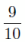
は合理的だが、息がつけぬ、ということがある。愛するということは互のそのスウィッチを理解することにほかならぬ。Ｙは私のスイッチを、私はＹのスイッチを押しつぶさぬようにしなければならぬ。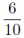
までのタヷーリシチェスキー〔友情〕を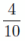
の恋々で殺しては勿体ないからね。
Ｙ、独りで居るとやっぱり戸棚なんぞゴタゴタだ。これでよい。そう思い、自分Ｙがやっぱりひとりの方のびのびして居るのを感じた。これは病院からかえって間もなくの印象。
本当に日本へかえったら一人で暮そう。
（月）
パスポート出国許可が出来て居ないと駄目というので、Ｙ、ВОКС へ出かける。自分一緒にクスタリヌイまで行って少しテーブルかけを買った。二時間ばかり居たのだが、疲れ、疲れ。
◎この頃、街上、春外套とともに乞食が多く現れた。
No. 181855 パンのクニーグ〔通帳〕（моя の）番号。
（火）
藤塚さんレーニングラードへ立つ由、よってくれる。イデルン［＃ホテル名］
のあどれすをもって。Ｙ、一寸したドイツ語をおそわって手帖に書きつけて居る。
――くれろというのは？
――早くってのはどういうんです？
――こりゃあ高い、まけろってのは？
数をも書きつけ、これでよしよしうまく役に立つという意気込みだ。
○君を大臣にするには百五十万円寄附しなければならないということになるかね
○原 百万円
夜九時頃、ヴルヷールを歩いてアルヷートまで出、油橋さんのところへよった。細君、大学病院の看護婦のつけとどけ次第なところを話し、自分びっくりした。菓子で、その菓子がよいところに集り、自分のもつ患者の悪口を云う。そういうのは少くともクリニクには見られぬ図であった。
十二時頃又ヴルヷールの、今度は左側を歩いてかえって来たが、中途までくると、こっち側いやに建物が大きく壁が高く淋しく薄気味わるくなって来た。すれ違う人間きわめて尠く、その尠い人通りが尨大な建物の壁に沿うてこっちへやって来るその感じいやに迫った。
Ｙ、こっち側いやに淋しいね、あっちへ下りちゃおう。
右側の住宅の並んだ歩道を歩いてかえった。一つは、左側、電車が疾走して来ては自分の通行しつつある方角とは逆の方へふっとんで行くのも淋しさの原因だ。
◎大きな建物の壁に沿うて歩いて居る。不図ここで追いつめられたら、もう塀にはりついて後に動こうにも動けぬ感じがいやに鮮かに心に来る。深夜自分の影が生命をもってその壁の上にあるのを感じ、それが血潮で描かれた感じにかわる。淋しい凄さ。午前０時の都会の巨大な建築のすき間。
○もう雪はすっかり消えてしまった。
◎午後七時でもトワイライトで、自分は窓から外を見ると、平静にして居られない。レーニングラードの白夜！
（水）曇
Ｙ、Passage に室がないので閉口して居る。一人先に出かけ、銀行、大使館、ВОКС
煙草（二十五本 ８к
）
エセントキ ２ビン（４к）
ソーセージ 百瓦
６к
リンゴ キロ 五十哥
下着 二留
ひろ岡さんのところへ病気中の御礼にゆく。家の前の活動で淋病の映画を見た。
（金）雨
病院へ行って Fromgorid からかきつけを貰って来る。まっすぐにクズネツキー・モスト〔街の名〕へ行って、あっちこっちへのお菓子を買う。ひどく重いのを下げて雨のびしょびしょふる中を歩いたので、かえったらふらふらになってしまった。
やすんで夜又前のキノへ「生ける屍」プドフキン主演を見に行った。
この活動小屋はガローシをはいて入れるからよろしい。
二人でモストルグへ行って食器を買った。雨、雨。
午後五時カルルスヷードに向けて出発。大使館では天長節の拝賀のある日だ。好晴。きのうからモスクヷはすっかり暖くなって、皮を手縫いでくっつけた春外套を着る。だが汽車が郊外に出ると、モスクヷ河には春の雪がとけて流れて居る。釣をして居る人間。
野では芽ぐみ始めた凹地や日かげに、まだとけのこった雪がよごれて、まだらにのこって居る。ロシアの田舎の景色。こんどヨーロッパから入って来て見る時どんなにうれしかろうと思った。
○まだ芽ぐんだばかりで葉のない早春の樹、林。
○小舎の間に林立した蚕のような印象を与える白樺の林。
目がさめて卓子の上を見ると、これはおどろいた。塵埃で真白になって居る。迚もレモンなしではやり切れず、車掌に貰う。
ネゴレーロイ八時三十分。荷物何でもなかった。ただ
があるので、七留何哥か保留された。
それからストルプセまで四十分。十五分も走るとポーランドとロシアの国境に小駅がぽつんと野の中にある。
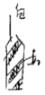
の標が立って、林の中に物見あり。
野原の中に逆もぎつきの木柵（針金つき）が延々と連って居る。その外の村路に沿うて又うねうね柵あり、あっちこっちにいろんな木の
形のものが立って居て、これが国境かと可笑し。子供がこっちからここまでは自分の分と棒を立てて居る感じだ。
○ストルプセの駅。小さい。その辺――プラットフォームを歩いて居る兵士や赤帽の帽子の形、モスクヷのプラウダ紙上のマンガでよく見た四角の凹んだようなの。小ぢんまりして、首や腰がよくかがむ。資本国の「礼儀」があらわれ始めた。
食堂で、
茶 三杯┐
卵 二つ│
チーズ一│ 10
ゾロチ １ゾロチ 凡
25
Ｓ クロチ Croszy(50)
12.5
パン 三┘
ストルプセを出たところ、木材を盛に出す。
○汽車、歯医者のよう。赤ビロード、入口の戸も硝子で左右の景色がよく見える。
○左右（常磐木）松、杉多し。
○ポーランド人、頭の幅せまく、髪一寸赤っぽく、神経質な感じ。線細し。
○汽車の沿線、よく耕やされて居る、もう農作がはじまって居る。
○田舎家、日本みたいな草ぶきもあり。
○車中レストラン、обед 七ゾロチ
○ポーランドの百姓も、やっぱり赤や水色のユーブカをつけて、白いプラトーチク［＃スカーフ］
をかぶって居る。
○丘陵多き景色、その上の木材！ 木材！
昼食 ゾロチで 25.80 それを日貨になおすと、五円六十七銭五厘
内訳
オムレツ┐ 円
犢 │12.50＝3.00
果物煮 ┘
コーヒー 1.00＝ .25
ザクースカ〔前菜〕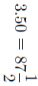
ブリオン〔肉スープ〕2.00＝ .50
ミネラリナヤ・ワダー 1.30＝ .30
タバコ 3.
＝ .75
税 3.
＝ .75
ステーション、淋しい松林の中。Wality. Ияте.
○ストルプセで一時間おくれる。中央ヨーロッパ時間。
○汽車に働いて居る女、月60
ゾロチしかとらぬ。生活に50
ゾロチいる。それだのに食堂で食事に25
ゾロチいくらいる。ここに資本主義国の生活断片あり。60
ゾロチは15
円いくらか、女中の月給だ。
『自由の為に
』という新聞（露字）40
ゾロチ
○綴字は旧式。
芝居（ワルソー） ボリショーイ・テアトル
マールイ
ポリスキー
ナチョナリヌイ
ノーヴイ
活動 ホリウッド
この新聞名は「自由の為に」だが、反対新聞だ。
「モスクヷの仕事効果あり」ポンベイ職工十二万人罷業の後押しをして居るというイギリスの通信をのせて居る。
――○――
ポーランド中学生がコバルト色の制帽をかぶって居る。制帽多き感なり。
Bufet は M klasy
○ポーランドの鼻、上唇をのぞき込んで居る長く細い鼻。
○ポーランドでもレーニングラード、フィンランド地方のように、沼の水の中から樹が生えて居る。日本の目に此は妙に憂鬱な特異な印象的風景だ。
楊柳のような樹。
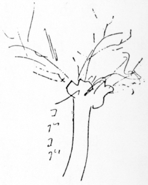
スワンプ〔低湿地〕がちょいちょいある。
○モスクヷではまだガローシをはいて居る。ここでは百姓女、線路工夫など殆ど皆跣足
で歩いて居る。
○自動車、沿線には全く少い。一、二台。
○茶 3.40 50 tip
○ワルソー。鉄橋をこして市内にかかると、工場地帯。
○大きな自動車工場がある。窓から数百台の組立中の車体が露天に並んで居る。腰の高い粗末な車台だ。
○砂の黄色いひどい地質。
○赤、緑などの縞毛布の小さいのを肩にかけた女。午後五時半
○ワルソーにつくと雨。雨でぬれて光る pavement。通行の男女皆小ざっぱりした装をして居る。
特に若い男の鍔のひろい soft と、belt の高い春外套。裾のひろいセーラーパンツで派手な靴をはいた形。見なれず、一種のおどろきを感ず。おしゃれでいやな感じ。好感は少い。
○ステーションを出がけに変なレインコートを着た小男がソフトのよごれた縁をひらひらさせつつよって来た。
――英語話しますか
Ｙは馬車にかけ合って居る。自分、昇さんに聞いた話もあり、ははあと思い、Ｙに、かまわずおけと注意する。
馬車に乗ってからまで外からつかまって幌をのぞき、Hotel de Palace という。ポーランド式、ごまの蠅。
これを上手く追っぱらってホテルの入口につくと、先にタクシが止って居る。幌の中に居る自分達を認めて又ソフトのひらひらしたアイマイな若い男が入口から出て来、荷物を御者台からおろした。Ｙ気がつき、ニェナード〔必要ない〕、すぐその男の手から荷物を奪いもどした。
間に自分お仕着せの男をよび出す。カントーラ〔事務所〕に行くと、まだその男がうろついて居る。四十三号というのを見ることにして階子をのぼりつつバレット〔召使〕、
――あの人はあなたの御知り合いですか。
ときく。
――いいや、そうじゃない。
――私は又話していらっしゃったからお知り合いかと思った。
つまり、ホテルではこんな蠅に何の責任も負わぬのだ。男だと一寸つかせて見るのも面白い。そういう場合女だと用心がいってつまらぬ。
○ひどい雨！ 雨！
ホテルの窓から下の道に散る雨のとばしりが見える。
○食堂で夕飯。ちらほら人影。
Ｙが、
――何故今日はこんなに人が居ないのか？
給仕、
――十二時すぎるとカバレーもあって、六時まで賑やかです。が、今日は余り入りますまい。五月一日の前夜で、ウォトカを売りませんから。
○カントーラで行列は明日の朝何時頃から始るか聞いたら、曰く、
――明日は社会主義者や共産党や、そんな碌でもない奴だけ行列するんです。芝居広場へ集るが、危いですよ。互にやり合う。ブルジョア――正直な人間たちの祭日は五月三日です。カンペイ式や何かある。――
もう、十一時すぎだ。然し雨がやんだので一寸歩きに出かける。マーシャル通り。モスクヷから来ると、物が豊富で、きれいで、実に目がたのしむ。one glance では皆よく見える程度だ。十二時すぎまで歩く。
○カーペット沢山、135 ゾロチ 25
ゾロチ 95
ゾロチ 一寸よいのがある。
○時計国産 6.30
○女靴下 人絹 4.30―9
―11
○レモン 2.5
オレンジ 1.50
バタ キロ 3.80?――
晴
――べこ、べこ
びっくりして目をさました。
――もうきっと行列、通っちゃったから
――ほんと？
なるほど微に音楽の音がする。こういう時、時計のないのは実に不自由だ。自分とび起き女中をよんで昨日の水をすてさせ（ここのホテル Victoria は英国式 Walking stand だ）時間をきいたら八時だという。やれやれ。
いそいで仕度をして何もたべず歩いてサクソニスキー公園近くになると大分人出だ。民衆的服装のもの多し（労働者でも、ここでは腰きり外套などはない。粗末なレインコートなどを着て居る。）
テアトラリヌイ附近へ来ると、店は皆表戸をしめ、鋼鉄の網戸までしめてある。大通りを横断してバリケードのように同じようなレインコートを着、ソフトをひらひらさせ、赤い腕章を巻いた男がわんさと居る。手に手に竹の太いステッキをついて居る。自分たちの目にとび込んだのは夥しい腕章と太く頑強なるステッキの数だけだ。
反動団体だね。
ここでは社会党がこの仕事をして居る。
見ると赤い腕章に何とかミリチアと書いてある。（男だけの群集。腕章とステッキの感じ。）そこをぬけすぎると、赤い旗を立てて行列が待ち合わせて居るが、この列の中にも赤い腕章は混って居る。
行列の中に女殆ど見えず。学生少し（制帽をかぶって居る）旗は七八流見えるだけ。プラカートなどもなし。人形などなし。
行列に参加せぬ労働者が多く、群集の中に混って見て居る。これは面白いと思った。
Ｙ、巡査（こっちの巡査はコバルトと白とのいい服装で、短剣とピストルを吊り、しゃれて居る）にきいて来た tea shop に入ろうとすると（芝居広場の隅）開かない。ガタガタやって居ると、タキシードを着た waiter が硝子戸の鍵をあけて我々を入れ、すぐ後をかけた。万一の用心。物々し。
茶をのみ、ブーロチカ〔白パン〕卵をたべて居ると、急に通りを群集がくずれて駈け出した。どうしたのか、赤い旗が動くのが見えた。音楽はなし。行列が進行しはじめたらしい。暫くして出て見たがもう何もない。のこった群集が僅かに歩いて居るばかり。
○ノーヴィ・スウェート通りを歩く。心地よい大通りだ。
○レミントン〔レミングトン型タイプライター〕の会社があった。入って価をきく。ロシア文字68
以上の由。Poland は輸入品はドルでうるのだ。
○絵ハガキを買う。
○辻に花売、紫のすみれ、黄色き水仙、赤チューリップ、柳。
○花店で勿忘草や黄薔薇、カーネーション等美しくもってあるの、久しぶりのよろこびであった。
辻のキオスク。煙草、花など、モスクヷのアジア的キオスクの行商人の列はここで完全に消えてしまった。
○鈴木さんのところ ミスケさんに順を書いて貰い、ホテルで обед をして（犢の脚のとろとろ煮てあげたの）美味かったが脂をおそれて少ししか食わず。馬車にのって出かける。
二時間十ゾロチ50
○スタールイ・ゴーロド街 幅狭くなった間をぬけて行くと、いきなり四角い広っぱへ出る。その広っぱに面した建物の façade〔正面〕はすべていろんな色模様で染ってある、赤地に黄の唐草、藍に黒、紫に緑、金に水色等、その建物は窓小さくびっしりつまって四角い空間に支那茶の箱のように並び、計らずハルピン風茶店の娼家の前をぐるぐるタクシーでのり廻した夕方の印象が甦って来た。
○猶太
町 表通りからドウォールを入った奥に小さくわけたクワルティーラがあってそこは暗い。一つの建物に千何人も居て――ひどく暮しつつ往来を歩いて居るのを見ると、皆派手な装をし、金ありげに見える。（目につく顔立ちの女）（猶太人女が概しておしゃれだ。その心理的理由）
○細々した店、表の灰色塗りの板戸。
◎公園、馬車で内へ入る、門扉をあけて失敬した守衛。
○自用車が通る。金持ちらしい家主。
○寒い。
○ホテルへかえって、茶トハム、胡瓜をたべて、出かける、ステーションへ。
○ポーランド人の世辞のよさ。金が欲しくても、貰ってもすぐ世辞を云う。
○五月一日に死人まで出して衝突するところ。
○生活の困難さ。中位の勤人 250―300、一日に 8zor ― 10zor 入用。
女でやすく、親がかりで着物のために働いているものあり（労働婦人として発達の低い一例）
○住居、一つの窓に応じての広さ、家具つき、戦後は 100zor ― 150zor 公定価格。戦前からかりて居たのなら六つ位室があっても 250―300
○芝居五人づめロージ〔ボックス席〕54
zor 活動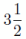
zor （よい場所）。
○レヴューは mad で席も少いのでよいところは一人16
―17zor
○新聞 .20
○ワルソー人口百万中四十万猶太人。
朝食 4.40 茶四杯、卵三つ、ピローシュカ二、ブルカ〔白パン〕二、tip 一割、ここではすべて一割の tip を記入する。
昼 定食 5.50 この位ですむと一ゾロチ25
として一人62
銭ばかりだ。
夕 茶 キューリ、ハム、マースロ、パン 7.10
午後七時二十分 ワルシャワ
小雨
チェッコスロヷキアへ入る。夜の間切符しらべパスポートしらべその他おちおちねて居る暇もなかった。
チェッコの金。コラン Korun。一コラン日本の約七銭。一弗
が三十コラン
○（もう畑は青い、馬に鋤つけて耕す最中）、堤の短い草も。樹の葉はまだ出て居ない。
○今日も平ったい野原だけ。地平線はやっぱり空っぽ
○村の家、赤瓦。
○ワルシャワ―ウイン間の汽車のレースには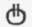
ВВ。ストルプセからワルシャワまでは、РКР（汽車がわるい。一等でも寝台なし。車掌のねだり）
○ポーランドもチェッコも畑の区切り方は細長い。大きな長方形だ。日本のように小さい四角のれんぞくに非ず。
○朝七時頃或駅で止った。プラットフォームのあっち側にやっぱり緑色の三等列車が来て止ると、中から労働者ばかりが鳥打帽の波を作って地下道に下りて行った。モスクヷへ麻袋を背負って出て来るような男、ここではリュックサックを背負って居る。
○モスクヷを出てから群集（労働）の中に女の少いのが目立つ。
○午前九時三十五分―十時十分頃チェッコとオーストリアの境へ入った。ウィーンからつまり汽車で一時間十分位の距離で国が終るというわけだ。
○ここで茶とサンドウィッチを隣のアメリカ人に通訳して貰ってたべた。やがてボーイが器をとりに来る。Ｙ、いきなり、青い帖面からのまる暗記で太い声を出し、
――ワス、コステッド、ダス？〔これ、おいくらですか〕などはないのだ。ボーイびっくりして
――ドライツェーン〔十三〕
それをＹ三十と感違いして
――トゥートイエル！〔高すぎる！〕
――トイエル？〔高い？〕
あとには帖面に
アッヘン、ジーベルリーゲル
とある。Ｙ、その通り云うから可笑しく笑わずには居られぬ。Ｙ、云い乍ら自分も笑う。ボーイも笑う。
ドライツェーンは13
で高くも何ともない。おまけにレモンが一つついて居るのだから。
○松林
○畑の中に屋根をかけた hay 堆あり。
午前十一時二十分維納
につく。
沿線市の外廓が案外に小ざっぱりとして居る点、ひどく注目を牽いた。コオペラティーブらしい新しい住宅幾つもあって、そこに赤い旗が垂れて居る。五月祭のなごりらしい。これも目についた。ワルシャワでは赤い旗など出た窓さえ一つもなかった。
Station で金をシリングにかえ、タクシーで公使館へ行く。御厨氏帰朝、加藤伝次郎氏に会い、ホテルのことなどきく。
Hotel de France より Tegettof がよかろうとのこと。公使、夫人に会う。心持よい人々だ。
独逸
からツェペリンがその朝来た。丁度、公使館のテレスから見える中空を飛ぶ。公使、写真をとろうとして機械をもち出したが、二重扉をあけて居るうちに遠くへ去ってしまった。巨大な銀色に光る機械の美しさを充分に感じた。
ホテル・テゲトフ、小さい七十位しか室のない家だが静かで、中央にあってよい。bed がモスクヷのように鉄ではない木で、近代的な単純な美をもって居るのや、湯が自由に出るのや。久しぶりで随分さっぱりした。
モスクヷの生活の欠
しさ、自分の愛するロシア人がいかにきたなく、不便で重く暮して居るか、ここにあるものを少しわけたい気がした。
○軽い食事をしてから、着物や Zwieback へ行く。
○夜、公使の御飯、日本食。大野氏食道楽。犬ずき、動物ずき、モスクヷの人から見ると、こちらは話題がひろい。相当美術やその他の話が普通に出る。
◎オーストリアとしては、経済がひどいが、市は外国人の落す金、金持ゼイタク税を重くして、
一九二五
後大分労働階級は社会政策によってよくなって来た。
○政党
キリスト教社会主義（極右）
社会党
大ドイツ党
共産党
○共産党と社会党との衝突はひどい。この衝突のときモップがついて焼打ちをやり、その罪をつまり共産党になすりつけるようなことになる。
○汎ヨーロッパ主義を称えて居る。
の話。
ここに於けるСССРに対する感じは、Poland より遠いだけ〔約二字分空白〕哩だけ――直接でない。あれだけの反感はない。が？ 冷淡。漠然暗い、貧しい感じを持って居る。
○通り
モスクヷのクズネツキー
きれいな肌色の女の下着類、レース、衣服、装身具、皮類の店ぎっしり並んで、間に本やは一軒、キモノ！ キモノ！ 帽子！ 帽子！ 間にはさまって、支那の店。横の大通りと大通りとをつなぐ縦の狭い通りにある骨董店、静かそうなカフェー。（カフェー、カフェー、これも維納の名物）
歩道に日覆いをはり出して、青い植木で区切りをしてパリー式に卓子椅子を出して居る。だがまだ寒くて人はそこに坐らぬ。
小さく店と店との間にはさまっていわば一間間口をはって居る食料品や。煙草エハガキや。
◎ウインナの tip の割は三人で頭七、給仕五、ビールはこび二の割。
（美術館の番人も一寸時間はずれだと、金を出せば見せそうにする）
○門が（ホテルでさえ）十一時すぎるとしまる。パンションの門は勿論。そして金をとる。
○決してやすくない物価。
○女中、一シル50
の髪を結って一シル位おいて来る。同じ家の門番に40
gr
ずつ出す。
○この労働住宅を見に行ったら、案内役エハガキを出して売り、その辺の子供までエハガキを出して売りつけた。このウイン気質。
◎ウインは三億の入超だが、その位の金は外国人がまいて行く。
◎ウインの劇場、コメディー、通俗物、笑劇、オペレットが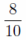
をしめて居る。
◎陶器店を見ると一寸奇麗なものがあるが、模様は花で、ロココを脱せず。幾何模様など一つも見ない。その柔らかさ！ 古さ！
◎リヒテンシュタインに木曜日に行ったら、五シル入場券をとると云ったのでかえって来た。
雨が降って居る。リヒテンシュタインの門前で自動車を降りると、加藤さんが山高帽をかぶって絵具箱を下げた半白のずんぐりした男と話して居る。
「私は紐育
の堀というものです。絵と写真をやって居ります」
島根に中條の祖父が居たことなどを知って居た。もう三十年暮して居る由。
加藤さんが
――オペラおききでしたか
と訊いた。
――ききましたが、よくなかった
――然しここのオペラは世界で有名なんですが
――そりゃヨーロッパででしょう。
些の躊躇なく堀さんは答えた。
――迚も New York のとは比べものになりません
自分これは面白く感じた。
ここの Wien の人間は大体保守で、America 人に金をまかせつつ、例えば、Grand Hotel は American が多いから一流の中の第三位 Imperial Bristol Grand と考えて居る。然しアメリカ人の方はヨーロッパを見物の場所、古きようろっぱとして考えて居るにすぎない。この点興味あり。そして自分も十日ウインに居る間にこの古きヨーロッパ Old Europe の感じ明らかになって来た。ながく居ると皮膚の上に何か粘着して、活潑な細胞組織の運動を阻害されそうな気だ。なつかしいロシアよ。荒っぽい、ごしごし皮膚をこするようなロシアの恋しさ！
○ロシアに居た間、自分は日本に失望した。ヨーロッパに入って見ると日本を見なおす。つまり新しき次代の世界文明はこのアルプス山脈の周囲からは生れず、何かもっと東のウラル、アルタイ、そして海の中なる日本もまんざら
それに関与出来ぬこともない文明の原動力が潜んで居そうに思うのだ。
ここのクーデンホフの Pan Europeanism というものも、いかに古き Europe を、猶太人の力、殖民地の自覚、光ささんとしつつある東方に対して守るかという点にある。消極大同盟だ。カイゼルの夢は、ヨーロッパの夢の一部であったろう。それの破れたのは、同時にヨーロッパの世界君主としての夢の破れたことを意味する。
◎ゴリキーが日本が東洋新文明の発源力をもつと云った言葉も、ヨーロッパを見ての上でなら肯定される。
◎ところが、ヨーロッパに居る日本人がいかなる程度にこの日本の見出すべき、創造すべき価値ある民族的地位を感じて居るか？ 大いに疑問だ。日本に居る日本人は視野の狭さからこの点を適確に把握し得ない。
◎外国
に居る日本人は世界観を得る以前に自己を adapt しすぎる。
○ jew 問題、この anti-Semitisme〔反ユダヤ主義〕に対したって、日本人は日本人の解釈を出来ず、Wien なら Wien 人の見解を以て見る。これは愚かなことだ。
jew に対して、日本人は古きヨーロッパ人のような怨恩二つともにないのだ。
○オーストリアとしてはひどく貧乏だが Wien 市としては金持。tourist のために。将来は、Swiss のようにする目的。
遊園地とし。工業は時計の代りにスプリングや何かの鋼鉄業、織物仕上げ、家具製造。製皮、ブロンズ細工。
○国際連盟の金をかりて居る。これからアメリカから借りる。
○宮廷儀式の中にあるスペイン風
◎キャソリック教の弊風
◎チェッコのガラス
◎ブロンズ細工（小さい人形、動物、クロンボ、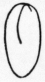
位の大さ
（記念塔など石少し ブロンズカストが多い）
◎金唐皮（手提）、ごぶらん織
◎卓子かけ、クッションなど毛糸刺繡
月
降り。閉口だが大丈夫だろうというので山下さんのところへ十時半五六分すぎに出かけた。
○メードリングまで汽車。
○ハタン杏の白い花、林檎の花。新緑にまじって美しい郊外の小家の彼方に山脈が見える。アルプスの裾だ。この山脈が見えるところ、自分には最も Wien のこのましい点だ。
○ションブルーンへ行ったときもあの素晴らしきパゴーラの柱列を透して彼方に山々を眺めるからこそ、白き建築の優雅で堂々たるプロポーションが活きるのだ。
○ウインの建築は視神経の快感によってプロポーションの美を感覚させた。
○その山の上に、ローマ時代の物見の ruin がある。事変が起ると、この山から狼火をあげる。それを又彼方の山の上で見て居て、その塔でも狼火をあげてローマまで順々につたえた。
山は松山だ。真直にのびた松の木の山だ。
○ Wien から十五分ばかりのところにリヒテンシュタインの居城があった。
○ Mödling〔メードリング〕の町。小さく、愛らしい田舎町。それでも七十五年間ペストが流行した後の感謝塔など町の二十歩（一周）位の plaza〔市中の広場〕に立って居る。やはりブロンズ。
○細いうねうねした雨上りの道を二頭立の馬車で山へ山へのぼって行く。リラの花盛り。若葉の濡れた香い。人っ子一人通らぬ小径の砂を踏む蹄の音。門扉を鎖
した Villa〔別荘〕、木蔭の小さい家、家、家、ボヘミア風の帽子をかぶり、半洋袴
をはいた男がパイプをくわえてリュックサックを負うて通る。
ローマ水道に似たウイン水道の大溝渠が小さい Mödling の往来を圧してアーケードになって居る。
一廻りしてホテルの日覆いの下で、川から獲れる鮭、野鴨の子、サラド、苺などたべた。天気が曇って居るから寒い。寒い。戸外で食事する天気ではないが、この Hotel の庭にも人気なく、リラの花ばかりよい心持であった。
メードリングへはクーデンホフ夫人に会いに来たわけだ。Taxi で Hotel から出かける。小さい門。絹の着物を着た女中が出て来る。大きなリラの樹が盛りの花をつけて居る。狭い玄関。顎の張った、額の出た、教養はあるが淋しそうな娘が出て来る。客間へ入ると、sofa の赤い縞の布の上に軽い黄色絹のかけもの、それよりうすい黄色の毛糸の室着をつけた夫人横になって居る。傍に紫リラあり。effect 大いに絵画的、嘗
社交婦人的だ。日本語で喋る。
「日本人は偉いんですねえ」
「私はこっちの真似をして居ますけれど、日本人だということをそれは誇りにして居るんですよ。ねえ、あなた、日本人は偉いですねえ」
「子供達は、お母さんは日本人だから何でも知って居る、そりゃあ偉いんだと思って居るんですよ。それでよろしいんですねえ」
「私は日本人の黒い髪がよいんで、黄色いところがよいんだから、どこへ行くんだって、ちっとも白粉なんぞつけませんでしたよ。鏝
なんぞ決してかけませんでしたよ」
普通日本人が外国人の妻になると、日本人だという確信をすてて adapt するだけだが、この夫人、江戸っ子らしい派手さと、負けじ魂で、社交界の nonsense を征服しつつ、日本人だぞと押しつづけたところ注目に価する。欧州戦争のとき二三間歩くにも Taxi にのったという話。話の間の gesture すっかり大仰な西洋婦人だ。社交婦人らしい雰囲気失せず。それに自分の身の上話だけだから（今は）我々には何だか話し難い感じであった。
Mödling N. Ö, Klause 15
一九二九年五月十三日山下奉文氏と汽車で来た。朝から小雨が降り、若葉爽やかな村道を二頭立の辻馬車でねって行く間にもぱらぱら落ちた。リラの花盛り杏や林檎の花盛り。美しい五月の山の頂に、ローマ時代の砦の廃墟がある。ウィン市水道の大渠橋がローマ水道の如く慎ましき町を横切って居る。
小雨 火
リヒテンシュタインを又見に行く。
○自分 Wien へ来て始めてドイツ派の画に在る美をはっきり理解することが出来るようになった。
○かえりに電車へのったところ、番号を間違えてあっちこっちを散々廻って、出たところはケルントナーの横。助かったと大笑いした。
◎ウインナは社会政策が世界一だという。然しこの老国に於けるこの問題は全然政策だ。こうすればよいからする、というだけで、旺なよき生活に対する熱意というようなものは、役人役人した役人から感じることは出来ぬ。著しくモスクヷに比較して心に訴える点がここにある。此処には市として金がある。ゼイタク税、旅行者の落す金。だが若々しくあつい心がない。
モスクヷは心がある。金がない。惜しいことだ。
夜八時すぎ、ヴォージラールから dutot〔ドゥトウ通り〕へ行くに Reu de Favorites〔ファヴォリト通り〕を通り変な横丁を曲り曲って行った。
倉庫のつづいた淋しい午後九時の明るい通り。人が通らない。
○一八〇〇年代の石壁に葛がからんで居る。
○ブラマンクの絵でなじみある強烈な黒灰色にぼけた四角い家、ぶっつかるような対照をなして並ぶ煉瓦色の壁。
○奥深いドウォールがある。通りすがりに両手に水を下げて行く男の、ひろい白襯衣
の背中が見える。
○歪んで、表情ある二階建の小家。
これ等すべてに人気なくて、三尺ばかりの壁と壁とのすき間の道路の奥にやっぱり洗濯物が下り、そこへ猫のような小娘が立って居る。
○ラジオの粗末な loud speaker がソプラノで唄って居る一つの窓は開いて、男と女が並び半身のり出して、通るものは我等しかない往来を眺めて居る。
○巴里
で偶然手に廻って来る銅貨或は白銅に微妙な生活の表情のあるのを屢〻心付く。例えば月桂樹のさし交した枝があって鳩がとび違って 1917, 10 c mes Liberté Egalité Fraternité〔自由・平等・博愛〕という文字が鮮によめる十サンチームの白銅がいつか十二年前の円形を既に失って居る。円は歪んだ。一方の半円がすっかり薄くまめつして居る。
表をかえすと、これはどうしたわけか白銅の半分は労役の間に不具になって男の顔のように半面ただのっぺらぼうに潰されて居る。或は「ナポレオン三世 1855」とあるが、表の鷲の姿はおぼろげに消えた十サンチームの銅貨。
それ等の潰れた小銭の持つ生活の表情がそれ等の通りにある。
カラー代りに格子縞の襟巻を巻きつけた労働者が二人すれ違った。
○巴里の煙突。素焼の Chimney。それは細かくほそく林立し、巴里大学の建物の上にも林立して、巴里の細き呼吸作用を感じさせる。
○街は暗い。右も左も暗い。たった一つ、往来に面した五階のてっぺんの天井裏から灯が見える。裏町、屋根裏の燈台。
○一つの屋根に様々に並んだ少くとも十から二三十本の代赭、薄黄の煙突。その間に混って細い三四本のトタンの煙突。
○窓の下には小庭園がある。鈴掛の木の下に小さい緑色に塗った東屋、黄色いカーテン、屋根は藁葺きだ。その小庭園を壁がかこみ、径をへだてて鉄の手摺りつき五段の入口、三階に大小の屋根裏窓が二つ開いた家がある。そこは孤児院らしい。入口のコンクリートの狭い内庭に台を出して、おそろいの灰色木綿の上っぱりを着た十一二の娘が二人洗濯をして居る。
各階に五つずつ窓が開いて居る。
巴里の街上風景が非常に絵画的色彩にとむ理由の一つは、種々雑多な高低をもつ屋根屋根の面白さと、外壁が光沢なき灰白色のせいだ。たとえば我等の窓からマロニエの梢越しに見える景色、単純に開いた窓に赤いカーテンがかかって居る。青い植物の鉢がある。小さいカーペットがその横の手摺にかけてある。印象にのこる色彩だ。艶ない灰白色の壁は風雨によって自然に出来た濃淡の上に、不思議な力でどんなこまかい色をも浮上らせ引立たせる役に立つのだ。
Ｙ、奥歯の金冠の下がくさったのでとったら、あと痛んでやりきれながる。殆ど一日うちに居て type writing のけいこをして居る。おなかがすいたので、字引を見て買いものにゆく。
フォマージュ〔チーズ〕六コ入 4 F40
クッキー 125G 3.55
レタス一つ（上） .75
玉子 二 （上） 1.70
チェリー キロ 400
大ビンミネラル 2.30
塩 一包 1.00
午後九時雨上り
僅かな薄明りで内庭を距てて、学校のぬれた雨樋が樹々の暗い梢を一条貫いて光る。内庭をかこむ家の窓々は開け放たれて居る。が灯は僅か十五六点しか見えない。暗い数百の窓々、遙か数千米西の方に点々と灯かげが閃く。教会の尖塔の奥に、エッフェル塔は、日曜故イルミネーション、一張羅の夜会服のように金と赤とにきらついて居るが、それは却ってこの内庭をめぐる巴里の一隅の静けさ、灯をともすのにおそき田舎らしい感じをますだけだ。
夜あけ、午前四時頃と夕方から夜、巴里も Vaugirard〔ヴォージ通り〕では都会はなれた素朴さが現れる。モスクヷ河岸の午前四時、曙の鈍い光の中に夜中つけのこされた瓦斯燈がまたたいて居る。街角から寂莫と街路にひろがったつめたい空気をつんざいて、一台タクシーがふっとんだ。眠らなかった夜明けのエクセントリックなカーブでリーパ〔ぼだい樹〕の並木の彼方へ。再び水の底のように圧力ある涼しい黎明の灰色。凹凸ある教会の石壁に沿うて外套の肩から手風琴を吊った男が一人の仲間と腕を組み、蹌踉
とやって来た。歩道は長い。意志まで酔いつかれた長いジグザグ歩き。蹄の音が遠くからした。街上が空になって十分もした時、辻馬車が一台黒く平たく現われた。御者は座席の奥に辷りこんで睡って居る。馬が疲れた動物の本能で首をたれたまま広場の中央を一直線に斜かいに車をひっぱって横切った。馬の首から尻尾までは変にのびて見えた。
再び静寂。蒼白な瓦斯燈――雀が暫く囀って朝のどよめきが起るのだが、Vaugirard の黎明に都会らしい疲れた燈火は一つも見えない。家の窓にも街上にも。エッフェル塔は深い朝靄に沈んでいる。マロニエ、アカシアの葉が静かに戦
いで St.〔二字分空白〕寺の塔の小さい陶器の時計の字面に反射するどんな人工の光線もない。燕の囀る声がやがて聞えて朝になる。
昨夜、Ｙ歯がひどく痛み、アスピリンきいて居た間だけやっと眠り、あとはあけ方から泣き声を出した。
七時半起き、板倉さんへ行って歯イシャの adress をきいて St. Logor の先まで行って見たが今日は日曜故 office はしまって居る。自宅不明。そのタクシーで〔二字分空白〕さんのところへ行った。表にシャムブル〔室〕云々と出してある。一間の入口にガルソン〔使用人〕が箒をつかって居た。五階の室。これもまだ寝て居たところを起し、一緒に New York dentist というのに行って貰い、ゴブランにあることを知り（支店）、モンパルナスまで一緒に来た。Ｙ待ちかねて居て、自動車へのりゴブランへ行った。が、下の受付でドクターは居ない。これをアプチェカ〔薬局〕で買えと云って、何か処方を書いてよこした。仕方がないのでかえって来たが、痛いのをやまず、水でひやしたのでは何にもならぬから氷を下の Restaurant から買ってひやす。二フラン。ひとりで夜食事をした。
氷がきいて大分ましになった。でも今いじると又駄目になるというので、氷を当てたまま横になって居る。食事二人室へとった。まずい。
板倉さんの赤ちゃん病院に入ってわるい。どうしたか、心配故見舞に行こうとして居ると、室が七階に空いたから見ろという。片方の室は下の（四階）と同じ側と見張し。
◎掘りかえされた樹木の根のまわり。
◎チューレリーの人形芝居。
◎道ばたに多い Kino
○エッフェルにつくイルミネーションはシトロエン６シリンダーの広告。シトロエン６６６ 稲妻
火事になり□
水が出てやがて
シトロエン６、６６６。
○シトロエン夫人が婦人モータークラブの会長。
七月一日に皆がマルセーユにつくというので、三十日（土）夜七時の汽車で一人出かけた。Gare de Lion〔リヨン駅〕。巴里から二時間ばかりの汽車の景色の美しさ。丁度トワイライトでその美しさ何とも云えず。シャヷンヌの特徴あるポプラの配列決してうそでない――図案でない心持がした。
朝七時マルセーユ着。
小さいステーション。メーターない taxi ばかり故イズボーシチクにのってノアイユ〔ホテルの名〕へ行く。
汽船九時着の由。珈琲をのむ。それから花束を買いに出かけたところ、大してよくもないグラジオラスしかないので35
Ｆの束をつくらせ、department store へ入って何かもって出迎えるおもちゃをさがした。一つ犬っころ。一つ人形。リボンも買って、タクシーにのってはとばに出かけた。晴れて、あつい。ピアに降りて見ると大して大きくもない船が船腹に赤錆を出して止って居る。ピアに立って居るのは、宿引きのような男水夫達だけ。自分貨物船かと思って幾度も幾度もカトリ［＃船名「香取丸」］
？ セ・カトリ？ ときいた。カトリだという。成程日本服を着た女が甲板から下を見て居る。程なく父、スエ子、咲枝、母、国の順で見つかった。母、遠くから見ると黒メガネをかけ、束髪引つめで、白粉はついて居るがいたってやつれて居る。
悲しい心持がした。父、しきりに合図をする。泣き笑いの顔なり。こっちで見て居ると、やがて父一人中甲板に立ってこっちを見て居る。その涙の出かけてしかたない表情、自分を送って静岡駅のプラットフォームを一人うつむきつつ歩いた父の様子を思い出させた。
Hotel へつくと母の疲れて居ることのひどさわかった。こんなのをよくつれて来た。
咲枝を愛して居ぬことその他すぐ不愉快だ。
◎二日に巴里についてから〔以下空白〕
Toynbee Hall
White Chapel Road からコムマーシャル・ストリートへ入ると、右に 6p. store あり。ひどい繁昌、少し行くと右に古風なランプがあって、そこに Toynbee Hall とある。掲示、九月二十二三日より始る講義プログラム、これが、Economy, Sociology, 皆ゴシックで書いてある。（中世紀風の）門。内壁にガラスのこわれた tump。
貧児夏季学校へ、寄附をつのるビラが一枚ある。
○内庭。葛の一杯ついた建物。金アミ硝子窓があいて、内部に白い卓子 cloth と、そこで茶をのんで居る人の姿。Bishop's Road から出ると、船会社があって、Bank of England があって、それから賑やかなよい通りがある。いかにも後に押し込んだようなところ。
Queen's Hospital for children, 黒い鉄骨、そこに動く子供の姿。実にひどい建物。
○木箱に赤坊を入れたのを兄がつれて居る。
三人か二人、子供だけで居るもの多い。実にひどい装
。
Victoria Park
ひどい子供
往来に向って立ち小便をする男の子。
――○――
○一本の樹もない街
○ガランとして低い家
○貧の、荒いすごい雰囲気
――○――
○土曜だから昼まで。
誰も居ず、何も開いて居ないと云った。成程！
――○――
Victoria Park の子供を見、Queen's Hospital の外観を見、そしてどうしてプロレタリアの画家があらわれないか。
――○――
強烈な印象をうけ、あの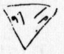
三角の子供の顔、忘られず。
（日）晴
リッチモンドへ行った。
羊歯
、樫、鹿、自動車の群（樹かげ草の中に止って居る自用車。なるほど日曜にはロンドンにはロンドン子が居ぬわけ）然し昨日見た east end の人々はここには一人も居ぬ。
キュー。
すばらしき芝生、
種々の樹、面白い熱帯植物の葉の形、闊
いの、細いの、這い廻るのなど、アンリー・ルソーの虎の絵はいかにもよく熱帯の葉の変化の美を感じて居る。ここにも相当のなりのものばかり。
キュー・ブリッジ――ウェストミンスターまで船、
（月）晴
もう数日でかえらなければならない。きのう Richmond へ行ったがその bus の動揺で工合わるく今日一日消極生活。
ゆっくりケンシントンガーデンで茶をのみ、タクシーで労働大学へ行って見た。自動車がまごついてやっとついた。古風な Private House to be sold の二階の窓を車の中から見上げると大きくと出て居る。
――ここじゃないじゃないか
――ここです。College とこのブラスに打ってある。
入って木村さん［＃木村毅］
の adress は分った。が、もう秋からは開かぬ由。年に二三千の経費が minus となり一つの Union からは出かねる由で。それを説明した大きな爺、心持よい男であった。
――○――
大瀧胖ちゃんが御宿の海で溺れたという手紙を貰った。
（火）晴
久しぶりで暑い。ｍ、せっかく London へ来て絵も一つ見ずかえるの哀れ故、いざとなったら車にのせて押すつもりで National Gallery へつれて行って近代の部だけゆっくり見せた。ターナーが気に入り、よろこんで居た。
それからケンシントン・ガーデンのひろっぱで茶をのませ、自分大熊さん［＃大熊信行］
をたずねたら居た。外国へ出て来たら自分小さい虫けら見たいな感じで自動車にしかれても平気みたいな気がすると云って居た。この感じ或時わかるな。
（水）
昨夜七時何分かに国、咲、パリからついた。夜、咲の買って来た手巾や腕輪を見ておそくなり、おきたのは十二時。二〇九へ行って見ると、まだ咲、一人 bed に入って居る。
咲、スエ、自分、外套さがしに十二時から六時までかかって咲枝ちゃんのもよいの、自分のもよいのを買った。
夜、黒田鵬心、竹内氏［＃竹内栖鳳］
夫妻来訪、Ｙへ長い手紙をかいた。No. 11。
珍しく暑い日で夕方まで、毛の着物ではあつくて閉口した。
○朝大熊氏より電話。茂木さん［＃茂木惣兵衛、後出の清ベエは誤記］
午後三時からなら会ってもよいとのこと。四時半にして貰い、三時に Mrs. Taws とお茶に会うことにした。
○大使館で教えて貰った Police station へ出かけたがここでは駄目。White Hall の Home office へ行けという。
又 Taxi でゆき、やっとすんだ。九月一杯の居住。
何しろ今日は眠い。あついところへ、いやに生理的に眠くて閉口し、やっとスレーターで昼食をしてからいそぎ部屋へかえって一時間余昼寝した。三時起き、行ったら（Royal Palace Stable）もう国、咲、父、タウス、息子門の前にかたまって待って居た。タウス、ヴェーシの着物で品よく見えた。ただ父迚も変に安っぽく見え、――婆さんのそばで――一寸いやであった。何故だろう。
Royal Stable 馬、馬車など、やっぱり一寸面白かった。それからトロカデロへ行き茶をのみ、しかつめらしいイギリス人に向ってイタリーの唄を歌う男の細い眉を眺め、四時半すぎ、やっと大熊さんのところへ行った。
自動車をおりたら、大熊さんとび出して来て一緒に出かけた。見当分らぬ、着いて Flat へ入ると、実に本がある。
からからした声の細君が（一寸酒匂さんの妻君を荒っぽくして品を下げたような）出、更に本のある部屋に案内された。茂木清ベエ氏、（まだ若く、丸く、長椅子にかけるところ、どっか重役風なところ、一寸見えたが）よく話し、イギリスのソシアリズムに疑問なきソシアル・エボリューショニストだ。本もよくよむ。だがイギリスだけを知って居るイギリスの merchant spirit によるソシアリズムに疑なし、インド自治国承認、等々。
細君夫を愛しては居るが、爪先立って居る傾向だ。
四人で支那飯。ピカデリーを歩いて大熊さん送ってくれた。十二時十五分ばかり前。
日 晴
Hyde Park Corner Victoria Park. Life of Martin Luther モヤへ No. 12
○公園＝有名なイギリスのローン。
樫、リンデン、緑色の椅子、犬 scotch terrier、子供、乳母車、手押車。
彼等の Flat の前に僅かの Patch of Garden がある通り、大人が大人との間にステッキ、パイプ、犬、本などをもって暮して居るのがわかる。
イギリス女は本をよむ。
午後六時―七時、茶色のカバンを下げた男、肱の折れ目に手提カバンの鞁ひもをかけてぶら下げた若い娘たち。新聞をよむ。
○椅子を並べてすわって居る男女。
○ハト、雀、まれにはリス。
山高、ボタンホールの花、パイプ、ステッキ、リューマチズム、カバ色の上っぱりを着た椅子番。
草の匂。樹木の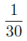
のプロポーションに人間が見える。丁度その
のプロポーションの鈍き色彩、運動、で人間が動いて居る。自然、それから人間。
――○――
巴里の Bois〔森〕の違い。そこに漂って居る葡萄酒のほろよい、エロチシズム、色。動
夜竹内さんのところへ行って喋り二時になったのでとまり込んだ。
午後二時頃ホテルへかえった。
少し睡眠不足故休もうとしたが別に眠られもせず。war を膝の上にのせ、ぼんやりして居たら小さい男の子が箱をもって入って来た。
自分そんなものを買った覚えはない。可怪しいと思って、内を改めるため紐を切った時思い出した。ピカデリーで、いつか夜母と父と三人で歩いて居た時、見つけて欲しいと云って居た白い猿を買ってくれたに違いない。「ああ I remember! Here must be a white monkey」男の子も箱の中をのぞいた。帖面にサインして渡した。上にかぶせてある紙をどけ、白いさるを手にとったら、いつか見た、そしてもやに似て居ると思ったそのままの姿で出て来たので可愛ゆく、抱きしめた。
抱いて居るうち、抱かれても何か思いつめたように一寸下目をして居る恰好を更えないので、悲しき玩具という感じがし、ほろりとなった。だがやっぱりかわゆい。手や肢がのびたり曲ったりする。arm chair の上に置いて出かけた。六時半から茂木さんのところ。
スティールで青い葉っぱの鉢を買って行った。
合場さんとかいう人の夫妻。大熊さんは、工合わるくて出かけられない由。
十二時頃までいろいろ喋り、タクシーで独り帰った。一寸不安。ひとりでかえるのいやだった。父、私のキモノについて居る皮の花飾り、カサカサして居るようでいやだと、リボンに金糸まじりの布でこしらえたブーケ買って来てくれた。咲枝、スエ子の分も。
十一月七日とか太洋丸に室がとれたそうだ。スエ子楽しそうに船室プランを見て居る。
母、「お前もよく考えてアメリカからかえるようにしたらどうだい」
親たちとアメリカを廻ってかえる気はない。室にかえる。早く休むのたのしみにしてかえって来たのに、横になると眠られず。昨夜、今夜話をきいたし、話しもした。だが、何だか足りぬ。潤いが足りぬ。芸術的なるものに対する欲望――つまり自分が書かねば落付けない焦燥が感じられて辛い。ロンドンにもう一週間居るの忍耐だ。机なき室に三週間居たことを痛感した。実に机のないのはいやだ。
一つ思いついたこと、それはこれから日本を歩いてもどこを歩いても一つ厚い木の折畳机をもって歩くことだ。実にこれはよい。ひろげる。布をかける。もう自分の隅が出来る――これは何とよいことか！
――つまり give & get なんだから一年のトレード・ユニオンに account sheet を見せて普通金の利子七分八分の配当を得ようとするのは、reasonable なことで、労働者だってそれがわるいとは云えない。それ以上とろうとするからやかましいので、それをきかなければ労働者がわるい。そうすればよいのさ。
――そんなことうけつけるような相手ではないのです
――うけつけるもうけつけないもやって見ないでわかりゃしないじゃないの
――○――
今〔約三字分空白〕にある Trade Union Congress のプレシデンシャル・ステートメントで
「米国はあれだけの面積をもって居て商品のはけ口もある。英国はそういう場合、国家協力でこれに当って行くよりほか仕方ないであろう。」この場合 Nationalism というのはちがうんだね、昔からある Nationalism と違うんだ。
ドイツの労働者、フランスの労働者とだって出来れば協力するが、先ず一番、近いやりよいところからやろうというだけのことだ。
――○――
君と私とはサイコロジーが違う。故に互に歩み合って協調しようというのがイギリス流さ。ところが君と私とはサイコロジーが違う、だからディクテーター・シップがいるというのが彼等の考えかただから妙さ。
――○――
イギリスの Commercial mind, National insualance, Federation of Trade Union
Miner の Welfare は Owner が一頓
について一片
だけ出し合い独立の Welfare association があってやって行く。
大きな一つのビジネスをやって居るのだ。
竹内君の調
いいやそこが僕のは大分違うんだ。
（水）ひどい暑
September heat と出て居た。war をよむ。
Hyde Park の草原。赤い dress をきた女男とふざけ、ころがって居る。遠くに居て、人近よらず、若しあのとき男があの女の首をくびってそのまま shake hands のようにして男だけ立って来ても、そのとき居合せた人は女を殺しつつある、又は殺したと思うまい。
Thames の河岸の倉庫と倉庫の間でずるずる河へ下って居る物すごい□
間の印象。
○近所の番頭の若いのが自分の隣りに坐った。彼は番頭らしいこのみで、ヘーリングのサラダ、卵サラダをたべ、オレンジ水をのんでアイスクリームをしまいにした。アイスクリームをすっかりたべてしまっても、ストローでオレンジ水をのんだ。その後に更にチョコレートクリームをのんだ。
十七歳位。金茶色の毛。そしてパンの切を少し口に入れてかみ乍ら、ゆったり肱を籐椅子の腕にかけ、四辺の景色を見廻した。
丁度一時前後で、ハグの女客（あらゆる時代の服装見本のような）
もやへ 17
（日）
ハガキ18
19
20
水
ロンドンを午前十一時に立ちガール・デ・ノール〔北停車場〕へ五時についた。
Golden Arrow〔汽車の名〕○ぜいかん一寸ききに来るだけ。何と三等と違うことよ！ 夜、エクセルシオの二番へ泊った。黒い地にバラの花ある壁紙。
（木）
モンソー・エ・トカビーユに宿をきめる。又七階だ。76
号。この前 Vaugirard ではもやが73
、べこが74
、いつも七階。
もやへ手紙書く。No. 21
（金）
もやの手紙皆で29
枚になった。書き終ってからゲルランへ出かけ日仏へより、ひどい雨にふられて Café に永く坐りこんでからしかたなく Pereire［＃ペレール、両親が滞在していたアパート］
へかえった。
又、雨にふられた、その秋の雨の感じつよくもやにハガキ書いた。No. 22
この手帖をプランタン〔百貨店名〕ですえ子と一緒に買った。やっとパリ帖が出来た。
この間から久しく何も書かぬ。
先ず
九月二十九日 夜親たちとモンマルトルの赤馬というプチな料理やへ出かけ相当満足してかえって来たら下で私への電報だと云って電報ではない速達を渡した。見なれぬ字だ。開けると、夫板倉鼎今暁六時死去いたしましたから云々。自分愕いてその速達を握りしめた。丁度Ｆ［＃父］
が鍵を中へしめ込んだまま出て来てしまって、私の方のカギでも開かぬ。
汗をかき、コンセルジェ〔受付〕を呼び、大さわぎをやったので、三十分もごたつき、十一時やっとタクシーでドュトウ〔通りの名〕の家へ行った。
ロンドンから十八日にかえって以来、行こう行こうと思って居て行かれなかったのだから自分の心持、実に不意打ちのおどろきだ。暗い入口を、いよいよ暗くして数人の男の人が立って居る。
「ああ中條さんでいらっしゃいますか」
顔の平ったい、眉と眼との距離のある人がそう挨拶した。
「すみ子さんは？」
すみ子さんが出て来た。やつれて、赤ちゃんの葬式のとき着て居た黒服を着て。――歯で死んだのだそうだ。
隣室へ行って bed の上にルバシカのようなものを着て少し歯を出し、下頰に紫色のあざをこしらえて死んで居る板倉さんの顔を見たらあわれで涙が出た。
澄子さん、これだけの不幸に会ってもちっともセンチメンタルにもならず、自分の不幸を強調もせず、実に素直な感じで自分つよく打たれた。美しくさえある。いや確かに美しい。悲しみに於て現れる心の美しさを見たと思った。でも
「中條さん、こんどばっかりは――」
と私の手をとった。
「ひとりで考えて、いくら考えたって、ね――頭が変になっちゃって――」
口かずの尠い人が真実をこめ、濃いおかっぱの髪をたたくようにして云った。
自分、泊り、他に三人の人が泊った。夜なか、たべるものが何もない。朝六時頃、茶を入れ、madam の卵があったのを六つゆで皆にたべさせ自分もたべた。
皆用事があるし、かわりばんこに出て、自分ひる間すみ子さん一人っきりにしておけず入棺がすむまで（午後六時頃）居た。
入棺した時、スミ子さん泣きがとまらず、苦しそう故 madam の床の上に横にならせ、一時にせよ泣きぬくまで泣かせた。ブドウ酒をのませた。（三十日）
ペレールにかえり、フロに入り泊った。
十月一日 雨
板倉さんの葬儀。
赤ちゃんを葬ったと同じ墓場へ行った。ピジョン・ホールのような穴へ骨をおさめた。
ペレールへかえった。フロ、泊る。
十月二日 ひどい風
十二時頃まで寝た。
おやたちだけ食事に曾禰さんと出かけ、自分スエ子うちでグチャズしをたべ、それから（八時すぎ）板倉さんへ見舞に行った。かえり、モンパルナスの角でコヒーをのみ、マデレーヌからタクシーでかえった。
三日 雨
ｍと衝突した。
ｍ撲ってよい女だ。
四日 雨（金）フランス語。
平さん来。クラマールへ引こす相談が出た。四百フランかした。自分クラマールもよいが引こむのいやだ――然しフロのこと、庭のこと考えるとクラマールへゆきたい。板倉さんへ行った。二十六日にかえることになった。
五日 雨 土
もやへ No. 30
ジェネヷへ二人立つというのですっかり仕度し十時頃家を出たら途中でｍ胃ケイレンが起って痛んで苦しがった。十一時の汽車だったが中途から引かえした。
ｍをねかし、自分も昨日雨の中を歩いて足をひやし、さむく、風邪気味故ねた。（うとうとし）ｍよくいびきをかいてねむった。自分間もなく起き、レモン湯をのんだ。
それから一寸日本から来た雑誌類をよんだ。ｍ、胃ケイレンではない。ひえで胃や何かが突ぱったのだ。自動車の中でｍが変に口をあき、唇を痛がって歪めた印象去らず。哀れ且つ何か憎々しいものがあった。ｍ何でも誇張するのだな。自分それを感じていやになるのだろう。自分の苦痛、悲しみ、そういうものを自分だけで持って行こうとちっともしない五十二三歳の女。なかなかやり切れぬ。若々しく悲しみを奔流させず、その悲しみでひがんで、口先の同情実に低級な同情を欲する。
悲しみをいかに支えてゆくべきかなどという方のことを云われると、わめく。度し難いものは女だ。女の愚昧を痛感し、自分寧ろ恐怖する。家庭内ではその愚昧と、変な消極的さでやって居て周囲をどんどん苦しめて、他人が一人入ると妙に活々し世辞よくなり、わけが分ったみたいな口をきいてやるの、そしてひとに買いかぶらせるところ、やり切れず。
女というものはいつも面白いが、この年頃の女も亦研究素材としては面白い。
ｍはもっと多くの人とつき合い、悧口らしくして居るならして居る方がまだ始末よい。が、面白いな。この五十年代の分裂。変なヒューマニズムののこり、性慾の減退とピューリタニズムを結びつけて偉そうに思って居るところ。人間の親切というものを常に疑って、例えばスエ子に対しても親が病気してもちっとも心配しない子だ、又は、私が目がわるくなってから何度ものをよんでくれた、何でも無い
方へ云う、仕てくれるが足りない
と決して云わぬところ、スエ子だってああいう気性の子だから、何だ！ そんなら、という気になる。ｍバカで Plain な仕事として何かさせることをしらぬ。いやに親切とか人道とか人生とか、ふりまわす。親切を強いられるものか？ しかし、しなければならぬ仕事は、すべき地位の人に要求出来る。そういう方にスエ子でも誰でもうごかしてゆく力をもたぬ。
スエ子をつれてプランタンへ出かける。スエ子の靴下がきれて靴のアミ目からちらちら皮の見えるのを
「かまわないわ、この人の足そんなに誰も見やしないから」と云ってはいて行く。なかなか太いところを現して居、笑った。よいさ、これも。自分、頭まきどめを二つ買い、手帖。スエ子に靴下を買った。
かえりにマデレーヌの裏の店でトーモロコシ四本買った。８Ｆ。電車でかえり、丁度日没で美しい（六時半頃）夕方の街をいい心持で歩き、Café を一つのみ、かえった。
父、つかれたと見え、腹がわるいと云って横になって居る。ひるの野菜スープののこりとマカロニをこしらえて、夫婦向い合ってたべた。
スエ子と自分、フジへ行ってスキヤキをたべ、（五円以上かかっちゃった閉口だ）かえりにサンミッシェル〔通りの名〕の端まで歩いて車にのった。
コンコード八時すぎに通った時、パークの外壁にイルミネーションがつき、オベリスクをスポットライトで浮上らせ、フォンタンがとび散り、実に美しい夜の都会と感じたが、そこへ細雨がちり、かえりには十時前後、もう水もとまり灯も消えしんかんとしたコンコード。
「電気けんやくして居るなあ、はばかりと同じね」一寸つける。
夜十一時頃かえり、いい心持で自分の床に入った。
（日）
九時すぎ目がさめると（実によくねた。ただ金を相当沢山どっかへ落してこまった夢を見た）カーテンの間から朝日がさして居る。数日来珍らしいことだ。うれしく、いそいで窓をあけ、秋ばれの空を眺めた。ややつめたい風。澄んだ日光。自分どっか乾いた落葉をふんで歩きたくなった。
パン、茶をのみ終ったら、もうその天気はなくなり雨が降って来た。
板倉さん午後三時から。
・今日から一時間くり上げになった［＃サマータイム］
。二時
からのところが先の三時
、夕八時―が九時だった。
晴（月）
始めてのところで昼食す。もうクラマールがきまってしまって、よしあしだ。が、落付くことは落付くだろう。
○フランス語
○去年八月から仕事をしなかったことを考えて恐ろしくなった。
○食事一度 20F 位は普通だ。が、このホテル、数
で質
をごまかして居る。
○ケイコ後、Madeleine で会い、コンコードへ歩き、いつか見たがって居たストラスブルグの像を見物させた。チュレリーへ行って、家のこと話し乍ら奥の噴水のところへ坐って居たら、太鼓叩いて公園のしまることをふれて来た。その太鼓どうしても 1890 年だ。そのように古い感じ。自分黄金狂時代をブルヷールで見たいと思って Madeleine へ来てくれと云ったのだ。Bld de Italie の方へ歩き、変な Café Restaurant へ入ってスペイン料理という野菜スープや、ハムライスみたいなものをたべ、出てＴさんが共同便所へかけ込んで、それから Volga Volga というのを見に入った。ステンカ・ラージンの情人を海へすてたロマンスを主題にしたものだ。映しかた平面で第一ヴォルガの感じも出ず自分不満だった。ただフィルカをやった男、ロシアの貴族のスレーブの或性格――暖かさ、愚かなユーモア純情など――出して居、上手に演出し最後はこの男だけでしまった。
スこしのブドウ酒と少き光線と、多くの炭酸瓦斯とで急に中学生になった。自分も大して滑稽も感じず、何か同感したのは可笑しい。Ｔさんペレールによった。父と左右田喜一郎の話などやって十一時半ごろかえった。
火 ペレールへ泊った。
起きると雨だ。
――雨ね、おとうさま
――ああ、黙ってるんだ、又問題が起るから
スエ子と自分下へ下りて自動車を見つけた。それにのって、元気よく Gare de Lion へ出かけ、一時間も早かったが（十一時のところ、時計がおくれたので（日曜日に）十時に間に合うよう出かけたのだ）汽車の中へ二人を納め安心して、いそぎ metro でトロカデロ〔広場名〕までかえりあと Taxi で Hotel へかけつけた。帳場へ note がおいてある。スミ子さん来てプランタンへ行ってしまった。今日すっぽかしては自分向ける顔なし。すぐそのままプランタンへ行き、子供部を見て廻ったらカンゴ婦と一坊［＃板倉鼎の長女］
とスミ子さんを発見、スミ子さん本当にうれしそうな顔をしてくれたので自分もうれしく安心した。
一坊の買ものすましてからカンゴ婦をかえし、食後スミ子さんの帽子、裏地など買い、スエ子の布を買った。車を見つけてのせ、自分達 Madeleine の角まで歩いて Taxi にのりかえった。
夜、モヤへ手紙かき No. 31 私が巴里から打った電報が南米へ行ったとは驚いたものだ。
家で食事。
水 雨
カーテンのすき間から日がさして居ると思ったのに
「雨ね、お姉様」
パンをたべ、Hotel へスエ子と行って一時までフランス語の勉強をした。一時にペレールで食事。兎を野菜と煮たのをくわされた。兎ははじめてだった。軽い、鳥のようだ。臭くもない。ただスエ子が
このひとの生れ年だから何だかいやなの。
と云ったので、自分もいやで、美味く不味しという工合ですました。
それから Hotel へかえってフランス語。四時すぎかえって来てスエ子と例の角の Café へコーヒーをのみ、例の店から届けてもらったもので野菜のスチューをこしらえなかなか満足した。
九時前に出かけ、黄金狂時代を見た。ひどくなってしまったフィルムだが、やっぱりよかった。鋭いこわい心理が時々淵をあける。あの餓えて、チャリーが鳥に見えるところ、家を廻っての追っかけっこのところ、又 new year's eve のあのジャガ薯おどりのところなど。
先もやと二人で中途から見て大したものと思わなかった。こんど見ておいてよいことをした。
スエ子
チャップリンは違うだろうが、チャップリンのつくる人、お兄様にとても似て居る、この人、だからいじめられたりするといやな気がする。
と云った。
自分国男がいつかモンパルナスの角で、ｍのベンジンを買うため大きな男につれられて片足をあおりつつ、せっせとわきについて歩いて行った後姿を忘れぬ。
又ロンドンで、ロングフォードのあの家に居て、「一週に一度、二人で一時間」英語のケイコをすることにし
「まあその位のものでしょう」と云う手紙をよこしたところなど、或感じをもってよんだ。
「お兄様、迚も御膳立てしてしまって、すっぽかされる性なの」
スエ子が国男を愛して居る感情、よく理解して居る感じ自分を打った。自分はクニオを最近はこれだけ知らぬ。
○スエ子、黒と灰色で、室の中央からピュッと分けて装飾した室が欲しいと云った。
○黒い絵、きたない絵がかきたいと云った。
○自分スエ子の内に強い、重厚な――その点では自分以上な何かがあることをこの頃感じ、たのしみだ。
○デジュネ〔朝食〕のあと、絵の話をして楽しく、亢奮した。
○うちの女中、一週に60
時間働いて 300F かせいだ上に、日曜の鳥 45F とつけて居る。
今日見たら一番高いのが 38F だ。そんなにデカイ鳥でもないのに。婆さんやるな、なかなか。
木曜 雨
もやへ、32
金 降るみ降らずみ
□□□
が来たと云っておこされた。クラマールの家の婆さん、自分が来るなら 1400 とかで、フロのガスは別だと云った由。
ひるを三人で食った。
それからペルラシェーズ〔墓地名〕の方へ――十九区へ出かけたが、地図なしでのたくり、大した収穫なし。ただ風景面白いのを二つ三つ見て、自分一寸描くもののなかったのを残念に思い、かつ、あの辺へ十日か一週間すんでああいう強い、美しい□
スケッチとっておきたかった。自分ペルラシェイズの前のホテルというのにゆくかもしれず。
□
、自分と歩くことを愉快がりすぎる傾向あり、ただ歩いてだけ居てもよいというようなところあり。私は柔かくてつまらぬ。
六時頃モンソー〔公園名〕で分れたが、自分方角を間違え、Place Wagram へ出てしまって閉口し Taxi でペレールへかえった。
日本クラブで鯛ちり。
土曜 晴
□□□
栗拾いに来いというがクラマールにゆくよりすみ子さんのところへゆっくり居たかった。トロアカルチエですえ子の海軍帽、湯浅さんにブラウズ縫ってくれるという布、コーセットとりかえなどやってモンパルナスの例の家で食事す。それから本やへよったら買わずに居られず、シャガールの画集 Cahiers d'art, panoramique du cinéma〔『映画パノラマ集』〕を買う。シャガールのは 250F で彼のサインのついたエッチングのすり一枚ついて居る。意気揚々！
すみ子さんのところへゆき、明日家へ来てゆっくりフロへでも入るように約束してかえったら return 10:30 という電報が来て居た。がっかり。スエ子と二人 Gare de Lion へ迎えに出かけた。Geneva はよかったそうだ。晴天で日光が輝き、暖かかったと巴里に居ては思いがけぬ話であった。
日曜 曇天 色の美しい秋。
平さんが片山さんをつれて来た。一緒に鳥をわけて昼めしをすます。半分のときすみ子さんが来た。かず子さんが風邪な由。自分きのうかず子がかえって来た時スミ子さんが額にさわってやって居た、そのときの様子や、かず公の弱々しいところを見て、いやな心持がした。早くよくなれ。佐伯氏になってはやり切れぬぞ。スミ子さんをつれて Bois de Boulogne〔ブーローニュの森〕へドライブに出かけ。
曇って、草の上を歩くと靴に露がつく。家でも黒、赤、茶などが実によく浮立ち、非常に印象的だ。ドガの競馬のような印象があった。
月曜
もやが改造から「芸術の社会的注文」の理論に対し送って来た九十九円七十五銭をべこにくれた。うれしい。このようなもやの愛、もやのやさしさ、云うばかりなし。
べこ、忘れず、忘れたくなく、この九十九円七十五銭の与えた感じを絵にしたい。
もやへ手紙33
―34
火 晴
ｍをつれてプランタンへ買いものに出かけた。ｍ、女の子みたいなものばっかり欲しがった。
改造、秀雄共から金が来た。改造500円 6100 フラン十二銭強だ。秀雄さんの方からは500円これがフランでなかったのは万歳だ。
スエ子風
ぎみ。ｍ、口の先でうるさく心配しつつ、実際では何一つしてやらぬ。やれぬのかもしれぬ。が、スエ子を可哀そうに思った。腰湯つかわせ、梅干番茶をのませ、寝床へ入れて Hotel へかえり No. 35 をもやへ書いた。
○戦前パリの諸銀行はロシアの炭業を完全に支配して居た。
石油は、フランス諸銀行は英国の各銀行と共にロシア・ゼネラル・コーポレーションを組織し、一九一三年にバクーの全生産（石油の四十パーセント）を独占した。
○マルチネ、ひどい糖尿病で、インソリンを三本注射しつつ、市役所の校正掛をやって居る。
娘――ローズマリ（ソルボンヌの卒業生）
息子――
（金）雨。もやへ37 ＝
稽古をやすむ。
朝、マルチネから今夜来てよいというはがきが来たと云って、片山さん知らせに来てくれた。
平さんに電話をかけたが居ず。二三度かけたが通じないので déjeuner〔朝食〕の後クラマールへゆき、St. Germain〔サンジェルマン大通り〕で食事をし（一人前７Ｆ位で）マルチネのところへ行った。
ペルラシェイズのそば。二階。静かな、会った後に感じののこる長髯の、オリヴ色のガウンを着、室内靴をはいた男だった。四十少しすぎだのにふけて見えた。
（土）雨。
スエ子とプランタンへ行ってお土産の買物をした。ｍの人形、木綿の布だがきれいな、品のよいのを買ったら、きものが木綿故、いやだと云った。
日 晴
今朝はストーブを燃
かず。
モヤからのハガキ。シベリアは食料欠乏の由。いろいろ買わなければならぬ。いそがしくていやだ。
Worker's life によると、鉄道従業員 1921 には、七十三万六千人が働いたが、1929 には、642,000 だ。それ丈の人間で従来以上の労働能率をあげさせられて居る。労働交換所では、94,000 人の人間があまって居る。
○ボーナスシステム。
去年ラショナリゼーションで鉄道従業員は一年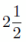
パーセントの給料引下げをされた。又今度は又更にそれを半年延期。
Party Congress
Owing to the difficulties of securing a suitable hall, the Communist Party's 11th congress will be held indeed, on Saturday, Son Mon.［＃「on Saturday, Son Mon.」はママ］
もやへ打電した。
27 nichi asa sannin tsuku. Pan, butter mineralwater kudamono yoi tanomu. Yuriko adress 68 Rue de St. Cload Seine Paris after 25th.
すえ子を助手にして荷作りをする。日本へ送り返すものの部大半出来自分がモンパルナスで買ったせとものなど
少し入れてもらった。がスタンドの箱だけ入らず。Hotel Gallic からもって来た荷物あけたら、スのびんや、米や、砂糖が出て来た。スは、もやがなまのサラドをたべたいと云って、朝二人で玉ネギ、ス、など買った。そして、それをこしらえかけたところへ板倉さんが入って来て赤坊が死んだから云々と葬式の伴をたのまれた。その板倉さんはもう死んで居る。
夜、両親芝居。十時頃ざっと片づけておちつき、ここに居る間かきたいと思う絵の夜かけぬのを残念に思った。
今日は、自分、一度も戸外へ出ず。さむくて足先に小靴下をはき、上にスエ子のジャケットをかり着して働いた。
紙入 男３ 女５
ネクタイ ３
メダル ３
リキューグラス一組
灰皿 ３
パイプ 女二 小一 男二
（木）
朝珍らしく九時前に起き、スエ子をつれてモンマルトルへ白い額ぶちを買いに出たが、なかなかない。やっと銀のつよく光るのを一つ買って、それからプランタンで大ざるを買って、ゼンビンをうんとさがして買って、家へ帰った。十二時前。
まだつめるものがのこって居る、と云って父上あつくなって居られる。平、片山両氏が手つだいに来てくれて大助かりだった。二時頃家を出た。Gare du Nord〔北停車場〕三時25
分。
父、朝茶をのみながら
「このガキ一人のこして行くのかと思うと辛い」と云って涙をこぼした。汽車の窓でも悲しそうな顔だった。
大きな汽車のやや暗い窓から、やつれた母の顔が妙にかげうすくぼーっと見え、わきに父心配そうな顔をして立って居るのを見ると自分寂しい旅立ちだと思った。少々変になりかけた。
○安達さん、小さいかたい茶色の陶器のような禿をもち、東洋的力ある眼でなかなか面白い人だ。（見たところだけでも）
○送ってから三人でペレールへかえり、自分の荷物大体まとめて、日本人会へ行き牛鍋をくった。
それからペレールへ荷物とりにより、クラマールへかえる平さんにもたせ、自分 dutot へ行った。もう自動車が待って居る。
すみ子さん、絽の鼠色の dress を着て、いよいよ眉の上のおかっぱを濃く、つかれて、何だかたよりなげに見えた。かず公をつれて、ひとりで二つの骨をもってかえる。来たときのステーション、かえる時のステーション、その思い出で、ステーションへついてからすみ子さん辛そうで、自分マルセーユにゆかぬことを気にした。行く気になって、切符買って貰おうとしたが、すみ子さん何と云ってもきかぬ。今日は一度に二つの見送りをし、何か心にのこった。二つともよろこばしき旅と云えぬ。父母の方も、ましてすみ子さんの方は。ホテルへかえり、吻っとして十時頃ねた。すぐ眠った。
父、国へ 1000F、私へ 4000F のこした。
○この間じゅうずっと家の食事して居る故か横ばら昨今の働きに拘らず重くない。
（金）
Hotel で、うんと眠りたいところ、相当やかましくて、比較的早く目がさめた。いろいろ義理をはたしたく思って居ると安達さんから夜食を食いに来いというわけだ。
それまでと思い、出かけてマチスの展覧会を見た。野口さんのところで見た絵
集の Front Page のなどのよさ。実に、色は彼のものなりと云いたい位自由に、注意ぶかく色をつかって居る。これなどになると迚も色ずりに出ぬ色だ。
マチスの画集を買う 200F
それから思い立ってフジへ出かけた。北沢楽天氏に会う。出かけて St. Michel〔サン・ミッシェル通り〕の通りで久しく心がけて居た書生帽を買う。自分に二つ、茂木さんへ一つ。それから boule〔並木通り〕を歩いて Café を一つのんで、プランタンへゆき、茂木さん夫人に送る cigarette case を買った 115F。もう一つ二百いくらかで緑地へ面白い図案のがあるのだが、いくら余分の金がありそうでも 200F 以上小箱に出す気がせず。惜しいがやめてオーデコロン、下着など買う。Wiere あの食料品店へよって、大野さんに送るものタクワン３、うに２、支那生葰
一、シリアの糖菓というものを送らせる。これですっかり義理をすましたつもりで肩が軽くなった。
夜、安達さんのところ。なかなか夫婦ともここではしっかりして居るし、よい。細君などねれて居るし、あの妙なような装が、さりとて、どこと云って妙でなく着こなせて居るから面白いものだ。なかなか細君に自分は興味をもった。若い細君達、モスクヷよりずっとましだ。その代りそれぞれ身分がある家の娘らしい。
かえって、荷物して、もやへこの Hotel から最後の手紙書いて No. 38、眠ったのは四時頃。
（土）雨
プランタンへザルを買いに行った。それからモンパルナスのスエ子が絵の具を買った家へ行って絵の具いろいろを買った。すっかりそろえたつもりのところベンジンをとくもの、筆洗いのものをすっかり忘れて来てこれでは仕方がない。
かえってザルへつめかけて居るところへ平氏来。これからタクシーへ荷をつんで出て、ペレールの家へ一寸より、郵便局へよってもやへ打電し、――いろいろありがとう母いかがやクラマールにうつった――
クラマールへ向ったところ途中で平氏がべこの猿を忘れて来たことを思い出した。自分腹立たしい気になった。戸棚へなど入れとくとそういうことになる。
クラマールへついて、荷をはこんで、お茶を貰って、さて平さん、娘と息子をつれて支那料理へゆくから来いと云う。支那はこまる。だが、変な天気だし、自分ひとり、居のこるの何だかいやになってくっついて行く。随分いやだと思って。支那料理くって、もやへの約束やぶって、あげくに猿を Hotel へおいて来て、何だか心のすまぬことばかりだ。
飯をすましてから、自分 Taxi で Hotel へ行って見たら、まだあった。よかった。が、このさるさん、懣
った眼をして居る。抱いて、又 Porte de ベルサイユまで Taxi 出て、そこの Bar で切手買ってもやへ出した。
皆と落ち合い、電車で平氏は途中で降り三人でかえった。
寝床の心持よさ話にならず。おまけに小さいユタンプが入って居るうれしさ。
もやから21
日に書いた手紙来て居る。bed の中でよんだ。が、自分正直に失望した。
モスクヷへ今度かえっても弄花弄花を自分期待しなかった。一週に一度弄花する。それが change な位貧弱な生活を彼女はして居るか。（モスクヷに居るに及ばぬ。それだけなら）ひとりで少し神経衰弱的になって居る――その心持わかるには分るが――自分この晩余りいい心持だったから、モヤの方がそんなにしょぼんとしてるのあわれみたいでいやであった。
（日）不定
朝いかにもよい天気だ。こんな日家に居るのは惜しい。池本さん来。平さんに手伝って貰って荷物どうやら片づけ、出かけて中野秀人氏のところへより、池本さんと四人ムードンの丘へ向って歩き出した。中野氏中途でかえった。（この三人の作るアトモスフェア、安価だ。）
ムードンの天文台、一寸よかったが――パリの展望大したことなく（天気不足のため）ずっと歩いてムードンの森をぬけ、クラマールの森をぬけ、七時すぎかえって食事。うちの婆さん平君に飯を食わせる筈だったと云ってきかぬので、フランシーヌと二人でおっかけたが間に合わず。
入浴。十二時頃にねた。
（月）雨。
いかにも秋の雨だ。風も吹く。外へ出る気も暇もない。朝、マルクスのロビンソン物語を一寸よみ、Ｙへ手紙39
を書き、ひるをたべて一寸したら平さん来。
経済第一日、緒言。
何だかよくわかる。知って居ることを云われるようで――つまり初耳ではないという感――到って入りよい。ただ相当時間はかかるな。今日は六時になった。
夕飯。下らぬ日本のハラキリや何か話し、十時に上へ上って来た。
今日から木でなく、ストーヴにあのタドン
をたいてるので、持ちはよい代り、かさかさした暖かさで不快だ。頸ねっこがあつくなって。盛に瓦斯を発生して空気のためによいと思えぬ。これでは困る。今暖房を手入れ中なのだそうだ。
スエ子が Warsaw で出したハガキついた。
（火）晴、秋晴れ。
何だかまだすっかり落付かぬと見える。まとまらぬ、することが。ひるまでイギリス教師、本やへ手紙かき。とにかく、今日はよい天気で外へ出ざるべからず。
妻君と手紙入れに行こうとして居たら平さん来。きのうたのんだ小包へ自分 London を入れわすれたのだそうだ。こまったことをした。あれが茂木さんへ着かなかったら閉口頓首。平さんと出て、l'Humanite excelsion スメイヌ・ア・パリを配達して貰うようにたのみ、のこりを買い、モンドを買い、クラマールの森を歩いて栗をうんとひろった。黄葉した林間、浅黄色のエプロンをかけた婆、黒き犬をつれてシャンピニオンをさがしに来て居る。空はすんで高い。飛行機がとんで居る。面白い絵だ、明るい。
かえってから巴里帖をこしらえる。やっぱりこうすると面白いものだ。立派な手帖でない、やすものの、いろいろのケイコや何かにつかうのに帖ったら猶面白い。文句も書く。帖ってゆくうち、一枚しかキップなどないといやな心持がする。こんなにして思い出をこしらえるのは馬鹿らしいが、あとでパリ印象をかくとすると、これがなかなか役に立つのだ。いろんな、細々したけちなようなものが却っているのだ。
たどんが燃えるの心持わるい故、フロ場へ来てこれを書いてる。
ミモサの花を買った。
曇。
ミモサの花、なかなか香がつよい。机の上にのせておくと、ものを書いて居る間にでもつよく匂った。朝フランス語の下稽古。こうして家庭に居るとなかなか進む。そして先生に整理して貰うと「必要は発明の母なり」だ。ものになる。経済第二日。フジ。ユルスリヌ
晴、やや曇。
久しぶりで Private Suhren をよみ出した。なかなか面白い。こういうものをよむと、いかにして複雑で Rushing な経験を整理するかを学ぶこと大だ。
いつもの雑誌やへ行ったら、こっちのロシア人が出して居る『絵入りロシア』というのがある。中に珍しくクープリンが何か書いて居るのでなつかしく見たが、すぺるは古いし、何かの綿々たる思い出みたいで面白くもなし。やめる。こんなものをよんで居たら、平さん来。一緒にＭ氏のところへゆく。妻君、平さん、ヘキエキというが別にわるい女でもない。ただ教養がないから変に物質的に――つまり夫の色彩がじみなのを、野口さんと比較してよいところにすんで居ないから、金がないから、という風に考えるような閉口のところはある。が、平ったい、房々したおかっぱで、若くてきれいでさえある。
Daily Mail を買うことにした。
夜、もやへ手紙41
。
（金）
今日は何とかフランスの盆故、平さん先生は来ないという。自分は来ると思う。月謝がたまってるのだから。
Daily Mail にボルドウィンが、インド自治問題で社会主義政府をサポートする意志を保守党の賛同を得ないで声明したことが問題になって居る。なかに「プラトニック・フラーテーション・トウ・ソシアリズム」ということばあり。面白い。
先生待ったが来ず。
五時に平さんが来るまで庭をミレットと散歩した。梨が沢山落ちて居る。がらすばりの veranda の中にこれがまだ青いまま沢山干してある。ジャムみたいなものをにるのだろう。そんなことは皆お婆さんの仕事だ。
五時から資本論。面白い。こういう勉強すると頭がはっきりしてよろし。
自分の旅行記、少しずつつかめて来た。これは、部分部分に分けて書かないとあきる。
土
今日、サロン・ドートンヌ〔秋の画廊〕の招待日だ。自分このような場所へ集る種類の人間を見るのが楽しみだ。三時頃までに行こうと思い、ストーヴの前で Daily Mail の Indo 自治問題をよんで居ると、松本さんの奥さんが来て、平さんもゆくし、何人かフランス人の奥さんもゆくから一時頃ここを出ようというがどうですという話だ。かまわないが、
――平さんもうあなたのところなの？
――ええ。
これはひどい。朝から人に来られては松本氏もあわれだ。おたいらさんだらしがないな。その間にこっちのマルチネの小説でも一頁よめばよいんだ。
体をふいて□□□
もやから二十七日の夜書いた手紙が来た。二十四日にロシア語の手紙書いたぎり、二十七日まで書かなかったのだから、ベコのところへ何もつかなかったわけだ。が手紙の中にせっかくの袋について何もメンションして居ない。忘れたのかしら？ わたすの。
八号の絵がもやの室へ大きすぎる――そんなに小さい室であったか――。
松本夫妻、平、永瀬（版画）とサロン・ドートンヌへゆく。要するにレベル展だ。却って版画の方に面白いものがある。技術の標準は相当高いが、作者の切りこみかたで面白いと思うものは、殆ど見当らなかった。よい意味で向うからとびついて来る絵も。――色彩のただ効果から来るとびつきはあるが――。フランスの画壇の空気をよく示して居る。却って自分は画商にある絵の方をこのむ。非常にサロン向な絵の多きことを感じる。
片山さんに会い、フジで落ち合い、食後ベルビロアーズの芝居を見に行った。コオペラティーブの新しい明るい建物だ。
上のレーニンの間。小さいレーニンの肖像が、まるでフランス流に細そり、軽くアレンジされた鎌と槌の間について居て、まわりには、桃色のプラスターでギリシアの仮面や、牧笛などが装飾だ。ゴリキーの「メシチャンストヴォ」「小ブルジョア」という題で。
演出は、よくない。
統一も押しどころもよくつかめて居ず、第一演出法がイディオロギッシュに云ってちっともかっちりして居ず。二幕の間にマルチネのところで会った〔数字分空白〕に会って、九日に試演がＣＧＴＵ［＃統一労働総同盟］
の本部であるのに行けるよう切符くれた。（紙きれに書いたもの）
十二時頃はね、Porte de Versailles についたのはもう一時僅か前。もう電車なし。仕方がないので、角の Café に入りコーヒーを二杯のみ、菓子を食い、出て、おたいらさん
――歩こうか？
――そうね、――どの位かかる
――僕の足なら一時間だが、あなただったら二時間かかるだろう。
――二時間か――そうすると三時すぎ。
――四時までにはかえれるさ。
そりゃ閉口だというのでよさそうな車見つけてのった。メーターで23
Ｆいくらかというのを27
ばかりやった。これなら夜と云えどもおそれる必要ない。何故、先もやと平さんがこの角で車きいたときに30
Ｆでゆかぬと云ったのか、不思議だ。モーローにきいたのかもしれぬ。いくらでゆくときいたのがわるかったかな？
つかれてかえったら、猿さん手にもやからの手紙と電報をもって居る。うれしかった。手紙よみかけたが、きものぬいで床に入って、ゆっくりしてからよもうと思い、横になってよみ始めたら、段々腹が立って来た。
むこうも腹を立てて居るのだ。自分が書いて居る心持をくまないと云って。――
もう自分は帰って来るのを待って居ない。待って居たときもあった。が、つまり何でも自分の思う通りにするのじゃないか。何しろ一ヵ月あてない手紙を書かせた人だから云々。
自分、水臭い女だとか、他人と同じだとか、幾度もやに云われるか知れぬ。そしてＹの云うことはきまって居る。自分はお前に必要なときだけ役に立たせられるために生きて居るのではない、云々。――
それこそエフ！ マトシュカだ。自分の云うことに責任をもたぬとせめて居る。私がｍとけんかして、又折れ合った。折れ合うことがいけぬと誰が云った。折れ合ったと、一言、心配した自分に云うべきだ。というのだ。言葉が他人に与える影響について、責任をもてといって来ている。これは尤もだ。Ｙは、自分が真実な人間であることを自覚し、その真実をもって心配したり考えたり、いろいろしたことを――その心の過程を認められず――ふーっとすっぽかされたように感じておこるのだ。
感情、いわゆる折り目正しさから云って、これは全く本当のことだ。
それから、Ｙの欠点について、自分が云わず、お前とやってしくじったから、自分はこんどから独りでやる、という。がそれは水くさいじゃないか、と云って怒って居る。
そう――自分そういうところがあるな。（Ｙは親切が足りぬという。ＹはＹに対してそれは親切が足りぬというが、Ｙ自身はどうか。
よく自分にあんな奴は云々といい加減多く人を片づけてしまうではないか）
自分親切が足りぬというより何か、例えば伊藤綾子の場合など、Ｙと自分と生れつきの感じかたが違うことを痛感し、何かその点、Ｙと自分とは別な存在○○だと感じるのだ。Ｙはその箇々の対手に向ってここの measure をもって居る。この人間にこの位でよい。この人間にはあの位と。その measure が、しかし客観的でない。或時気に入らねばせぬ。気に入るとする。それなら私のように、そのものに対して、自分が気のすむという程度――限度――それまでやったらよいのではないか。どうせ客観的でないなら。
客観的である場合もＹにはある。その条件は多く具体的標準のつく場合。Ｙは親切だ。が、何だかひろく私的で、何だかＹに特殊のアッタッチメント（心の上の）がないとＹから親切を期待するのが困難のような普遍性欠乏がある。
まして、Ｙ、この頃のような状態で、私に腹を立てると、大して、よい怒りかたもしないのだ。
昨夜は手紙よみ終ったら実に腹が立ち、実に腹が立ち、びりびりさいた。もやからの手紙でさいたのはじめてだ。
これは自分、こうしてここに暮して居て、つまり絶えず考え、案じもしいろいろ思って居るのは誰のことだ。あのいそがしい中からこまごまいろいろのものをそろえ、袋を縫い、絵まで送ったのが、水臭い女のすることか。
チョルト・ワズミー〔こんちくしょう〕
当分手紙かかぬなら書くな。自分も書かぬ。そう思ってびりびりさいたのだ。が、すてず、ヌトゥム・ボチカ〔ナイト・テーブル〕の引出に入れた。
Café へよったばかりでなく、この手紙でむらむらしたので眠れず、散々頭かいて頭があつくなって、オーディコロンで髪くちゃくちゃやってつかれて眠った。
日曜
ねて起きても、この心持のつづきがあって快からず。Ｙ、あの手紙28
日に書いて翌日またよんだが同じ心持故出したとあるが、あたり前さ。ひとりで居てあんな激しい心もって翌朝になったからって忘られるか。
だが、自分今日もやに手紙書く気にならぬ。が、書かねばさっぱりもせず、さりとてチワ的手紙書く趣味ないな。迚もないな。閉口だ。
十一時に教師来。金をはらった。家へも金を払った。1455.50。その時見ると、家のものが立つときのこして行ってくれた 4000 がもうすっかりない。国男の分まで食いこんで居るのでびっくりした。二十四日に皆が立って今日まで十一日だが 1000 はお平さんにやったとしても何だか分らず 1000 とんで居る、びっくりした。これからキン縮、キン縮。つまりキモノ一枚やっと作り、時計も買えるか買えぬかだと思ったら困った。可笑しい。が、困る方が多いな。もう日本飯はいやだ。いつもべこ君が払うんじゃ閉口だからね。支那はやすくてよいが――。
松本弘二氏にドイツのＰの絵や何か見せようと思って持って出たら留守。つい池本氏へより平さんに明日は来て貰うことにして Café を角でのみ、かえった。
ある丈の金をしらべて、いる金をとりのけた表、
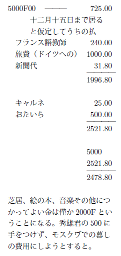
改造からの 6100 のうち 1000 は国男の分だから、これではキモノどころでなし。だが仕方がないから一枚だけ Zvavon でよいの作ってくか。ブルヷールでよいの見つけて買ってくか。
――○――
もうぴーぴーで閉口故、どうしても仕事せねばならぬ。これから小遣帖もつけようかな。今日仕事のために моя の 1928 年帖を出し、実に面白かった、細かくて。
入浴
早く絵の本を買い、雑誌予約してしまうべしだな。
月曜日
朝からもやへ手紙をかいた。
一寸散歩。
資本論、交換カチのところ。
火 晴
いろいろ考えて居るうちに、モヤがひとりでモスクヷのあの室に居て腹を立てて居ると思うと可哀そうでやり切れなくなった。
そこで Post office へ行き
ベコアヤマル キゲン ナオセ モスクヷデ オコルト アタマニワルイ と打ってやった電報を。そして手紙を出した。No. 42苅田さんへも同時に。
平さんが来てメイゾン〔数字分不明〕へ行き、かえりに片山さんへよったら風邪でねて居た。
（水）
フランス語、始めて動詞の変化が出て来た。この先生ちりぢりばらばらに教えるので、何だかこまる。
すましてから、いそいでアルコールランプや何かもって出かけ、平さんの近所で皿を買い、重いのでよったら五分前に出たというところだ。これは閉口と思いつつ停留所へ行ったら、居る居る。たすかった。
それから St. Michel の附近でいろいろ買い、片山さんの下宿へ行ったのがもう七時。食事すましたら九時過ぎ。それから資本論やって貰い、その二人を片山さん divan の上から写生した。
かえりに Café によって休み、相当歩いた。
おたいらさん少々センチなことを云う。
一方資本論で頭よくしようとしつつセンチになっては何もならぬ。
（木）No. 43
これはよい日だ。第一もやから手紙が来た。来た。書いたか！ 書いたか！
フキゲンだし、しょげた手紙だ。だが書いたのはよい。モスクヷで、ひとりで、手紙書かずに居られるものか。
その上天気がよい。話にならぬ位よい。
自分犬の仔のような心持で、うれしく、しかし恋病にかかって Post へゆき、
テガミアリガトウ タスカッタ モヤモゲンキダセ と打った。28
Ｆといくらかだった。たかい。だが手紙よりよい。そして、朝手紙よんだとき書いて手紙を出した。
○松本さんのところ
入浴、センタクをした
金 雨
せっかくした洗濯が雨のためかわかず。閉口、フランス語。この先生、帽子をとったら（初めて）何だか貧相になったが、可愛い女になった。額が出ると人は随分感じがかわるものだ。大して手も入れてない髪がくしゃくしゃと下って居て、何だか可愛いかった。ひたいをかくして、いきなり目だけ出したのと、感じ違う。ひとは額で力、貧しさ、よわさ、つよさなど出すのだな、随分。
夜、片山さんと食事して Com の試演を見てゆくので、おたいらさん朝来てくれた。
今日おたいらさんの顔を見て、生理的病気が起りかけたが、勉強したらなおってよくなった。行ったら片山さんまだ体の工合すっかりよいというのでない。あぶながって三人食事だけして、木村毅に会って、平さんと二人でＣＧＴＵの本部へ行った。
この前のよりはよい。第一ロシアの作品はフランス人にこなせぬ。俳優もこの方がつかまえどころを理解して居る。十二時頃すんだ。St. Michel へ行ったところ。
一寸の間に（Café を一杯のんで居た間に）終電車が行ってしまった。
随分歩いて Porte de Versailles までかえり、Taxi でかえった。
五日、六日の夜二人で家までかえる途中、せんちなことを云うようになった。その圧力がかかって来てやり切れぬ。又金曜日はこっちも感染した。
芝居から出かけて、歩くうち、Taxi にのっかって来るうち、工合がかわって、降りてから二時間もぐずついてしまった。
嵐。嵐。
土
晴れたよい天気だ。
この頃は大抵一日おきにはれたり曇ったりする。散歩。家。
Private suhren をよみ、いろいろ考える。
○自分が、頭がちに惚れたときはいい心持だな。あつくなって、後光がさして、賢くなって、ええ、一つ仕事してやれという気になる。
惚れられて感染したのはいい心持でない。こっちから後光がさし出さぬ。一種意気消沈してしまう。惚れる方がすきだな。惚れられるより惚れる方がすきだな。惚れられて、それに感染してしまったら、それを早く腹の中にしまうだけになることだ。
感情と官能との分裂があるからいけぬ。惚れられは。惚れたときこの分裂はない。よい心持だ。
日
朝平さんのところへ出かけて行ったら、食事して居た。一寸家へやすみ、二人とも金なし故 St. Denis へは行かれぬ。ポト・ド・ヴェルサイユのそばの商業組織展（商業用具展なのさ）を見て、メーズリ展、真独立展を見て、平さんのところで食事した。貧しき食事。でも美味かった。
それから薪をたいて喋り、いろいろ喋るうちに自分いい心持になった。平さんの親切なところ、人生に暖いところ、感じ、いい心持になった。
（月）
今日はアーミスティス day［＃第一次世界大戦の休戦記念日］
だ。休日。
うちのフランシーヌ、池本さんを会わせなかったり、平さんをいつかえるか判らぬと云ってかえしたり、変なことをする。十六歳の娘の嫉妬心だ。
夕方、山崎さん夫婦子供づれで来た。池本さんと。
平さんと片山さん五時頃来て、松本さんへゆき、食事によばれた。そのとき、版画をやる人、永瀬さん、宇野浩二が気の違った時のことを話した。医者が気の違ったのを元気づけるために、神経衰弱でしょう。まあおなかをすかせないようにして云々と云ったのを、ただおなか空いたらわるいと思って、今たべたのに、ああ空きゃしまいかと思うとすいてしまう。さあ何かよこせよこせと大さわぎになる。
箱根へゆくとき、妻、母、永瀬氏、小田原で自動車をさがしてる間に行方不明になってしまった。さがしてると俥夫、旦那、何ですか頭のこう禿げた変な旦那、さがしてらっしゃるんじゃありませんか？
――うん、そうだが、君知ってるのかい。
――ええ、たった今待合へお伴したところです。
――何だ、そんなところか、じゃすぐつれてってくれ。
行って見ると、宇野座敷でのたうちまわって居る。
――おい、どうしたんだ、何してるんだ。
――いや腹がすいてたまらないんだよ。それでここへ食いに上ったんだが、くわさん。
下へおりて来て（永瀬）あの男は一寸病気なんで、何でもありさえすればいいんだからとたのんで上って来て見ると、床の間にきれいな薔薇が生けてあった。その前へ行って両手でその美しいバラを食って居た。
（宇野よ！ 宇野よ。）
それからもう一つ。
情人が富士見町にある。宇野ははにかみやで、手をにぎらず、接吻せず、抱擁せぬ。箱根へ行って、かえりにその女と来て、桜木町の家の手前で下りる。
じゃ私失礼するわ、
女が自動車をおりかけると、宇野何も云わず女の手をぎゅっと握った。女、五年間そんな事をされた覚ない故、万感交々で、涙が出そうになった。すると、いきなり宇野は、その白いきれいな女の手をかじり出した。
愛情の表現ではない。宇野は腹がすいたのだ。が、やっぱり彼は美しいと感じたものをかじり出した。
自分宇野のもみ上げ、永い顔と、あの獺
のカラーとを知って居る。そこでこの宇野が黄色い気違いの顔で美しいバラ（何か赤いバラとしか思えず）をたべたところ、白い美しい女の手をかじったところ、非常にタッチングではないか。何か彼の芸術魂とでも云うものを示して居て、自分額がかたくなった。永瀬それを笑って喋って居る。自分次第にこの男の友情がいやになった。何度宇野のこの美しくあわれなバラをくった話をして、バカな笑いを笑わせて居ることか。
この男から眼をはなせぬ憤りを感じた。
こんな奴を、しんのわからぬところのある奴を、友としてはやり切れぬ。あの時、誰が自分と同じように感じたであろうか。
憤りを感じ自分、「あなた宇野さんと大変親しいお友達なの」ときいた。
――○――
久しぶりで芸術の話をして自分活々した。やっぱり自分芸術の話をせずにはやり切れぬ。
片山さん心持のよい人だ。湯浅さんの持って居るような一種のプレゼンス of mind があってよい心持だ。片山さんはよい友だ。
自分には片山さんがいる。
もやへ手紙。44
火
もやへ45
。
日仏で金をとり 500 だけあずけ、千国男へ check にした。
○サロン・ドートンヌを見、かえりにモンパルナスでマチスのデッサンを買った。面白い。
（水）
雨、ひどいもや。
もやから手紙来ず気にかかる。どうしたのか、べこなんぞ居ないものと思えと思ってやって居るのか？ それとも病気して居るのか？
仕事、一枚半。
こんどの仕事にプライヴェート・シュレンが役に立つ。あの書きぶりが。きのう All Quiet Western Front［＃正しくは「All Quiet on the Western Front」］
を一寸見たが、ああいう文章は、仕事するとき――今いらぬ。
○Ｔさんが自分に抱く心持、自分がもやに抱いたような心持なのだろうな。
活気の出る、前進的な、人生があついような心持。惚れたものは聖者になる。少くとも熱気が頭から立って後光になるという点で。
Ｔさんが自分にもって居てくれる親切、理解、それは自分に充分なのだ。が、才能の種類で自分にとって、彼では足りぬところがある。less 惚れだ。惚れるというところまでゆきかねる。故に、彼の真価をかうには――彼をよい状態におくためにも――わるくほだされぬことだ。この点、考える必要がある。わるくほだされると自分にのこるのは、結果感覚的なものだけで自分元気になれぬ。不快になる。彼の真心までいやになるからだ。
――惚れる、惚れないの微妙な差。Ａの場合自分、こんな心持の差がわからなかったのだな。だから変に苦しくて、それが恋だと思って、五年をやりそこなったのだ。惚れるねうちのある人間に惚れたときの、明るい、昂揚した、燃えた心持‼ もやよ、お前に感謝する。ほれるという心持の光りを教えてくれ、不健康な恋愛から自分を護ってくれる力。
この理論でゆくと、□□□□□
少くともほれるねうちはあったということになる。
自分は本当に光のかたまりになったからな、あの数日。
午前四時すぎ、カルタをして帰る。
○もう消えて居る街燈
○角に馬車が居る、御者いねむりをして居る。
○黒外套に黒プラトーク［＃スカーフ］
の女が三四人居る。
――何をして居るんでしょう。
――七時から開くバターを買いに来て居るんだろう。
○三日ばかり前、急に雪が降った。浅いその雪が凍って、ヴルヷール［＃並木道］
の青草の根にのこる。
○五時すぎの月、緑、赤、紫、黄の円光が月のまわりにかかって居る。土曜日の寺の鐘の音が、その月の輪に入ってふるえた。
○七時頃、月は中天に高い冬の月。
○電車停留場で十五分電車が故障した。
Р・К・К・フロート［＃労農赤色海軍］
の水兵が外套の背中に二筋のリボンを下げて
――二十四番はここへ止りますかね
顎骨のはった耳の高くついた顔に地方からの風がのこって居る。
――何番？
片手ない爺、だらりと古外套を着て、右手に火のついて居る煙草とヴォクルーグ・スウェータ〔『世界をめぐって』〕をもって居る。
――二十四番、あっちへ行くんだが
――じゃ、そっちだ、今十八番の止ってるところ、
○鳥打帽をかぶって白まがいアストラハンの外套を着たコムソモールか、新聞包みをかかえて、カタカタ足ぶみをして、自分の手の爪をじっと見て、彼方へ行った。かえったときは、何か口に入れてむにゃむにゃかんで居る。
○電車が来た。人なだれ。
――さあさあ、お婆さん
車掌
――冗談しないで車内へ入って下さい
――冗談してやしないよ、婆さんとふざけられるか
○停留場のガラスばりの内。
ベンチに黒いタムをかぶって、この頃流行の横線入り靴下をはいた女、両脚をそろえ、エナミルのアングリースキー靴を眺めて居る。
やがて男が来た。青い技師帽。
Grand Hotel の方へ行った。
○元ムラーマルヌイ〔大理石づくり〕であったグランド・ホテルの入口。
○電車を降りたところに、新聞雑誌のラフカと煙草屋などが並んで居る。板壁の彼方は林であった。白樺の林。
○青いタイルでファサード〔正面〕を張った家。
窓から覆いのない電球だけ下って居る白い室の壁が見えた。
○二階だが、下は半地下室の小さい家。
○新しい木の柵、空地、奥の新しいコーペラチーブ［＃協同組合住宅］ 。
底本：「宮本百合子全集 第二十四巻」新日本出版社
１９８０（昭和55
）年7
月20
日初版
１９８６（昭和61
）年3
月20
日第4
刷
※「ローザ・ルクセンブルグ」と「ローザ・ルクサンブルグ」の混在は、底本通りです。
※複数行にかかる中括弧には、けい線素片をあてました。
※「ロシア語および若干の外国語については、本文中に邦訳を付し、〔 〕でその箇所を明示した。」との記載が、底本解題（大森寿恵子）にあります。
※「〔感想〕」は空白ページのあとの日付のないメモです。
入力：柴田卓治
校正：青空文庫（校正支援）
２０１５年12
月13
日作成
青空文庫作成ファイル：
このファイルは、インターネットの図書館、青空文庫（http://www.aozora.gr.jp/）で作られました。入力、校正、制作にあたったのは、ボランティアの皆さんです。